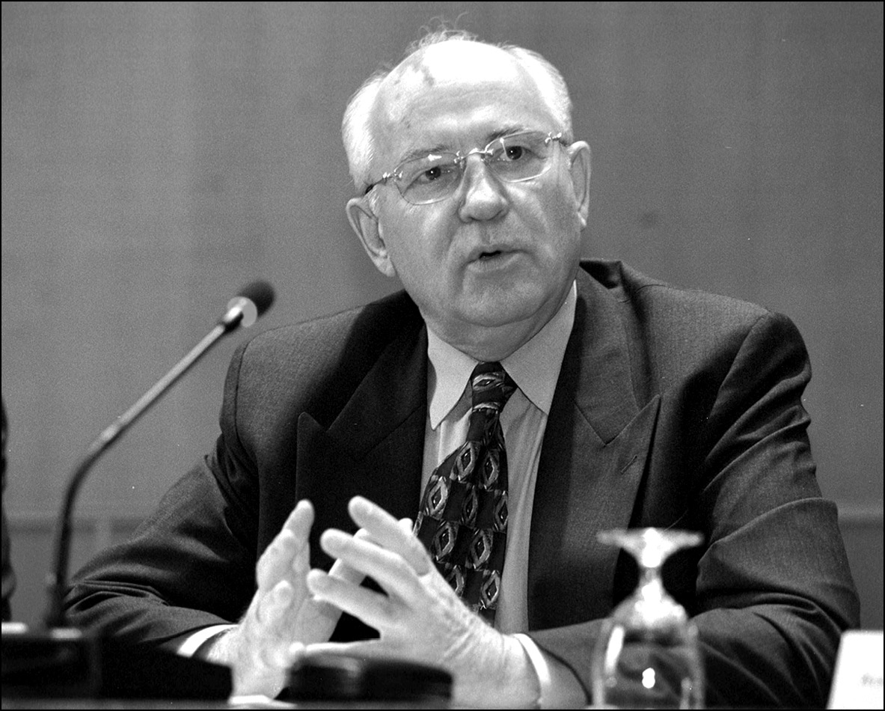
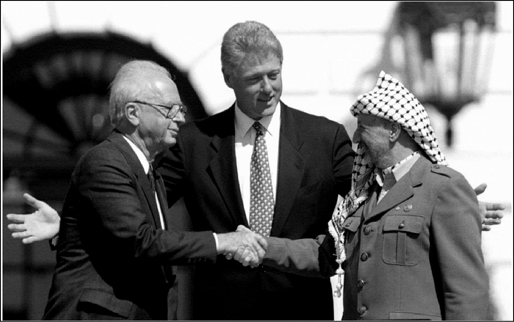
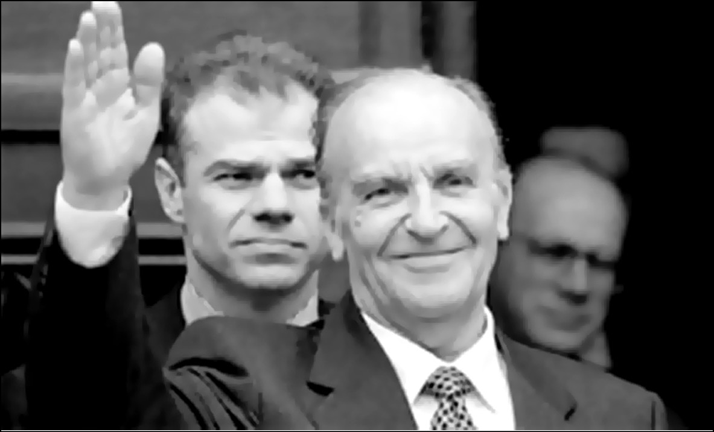
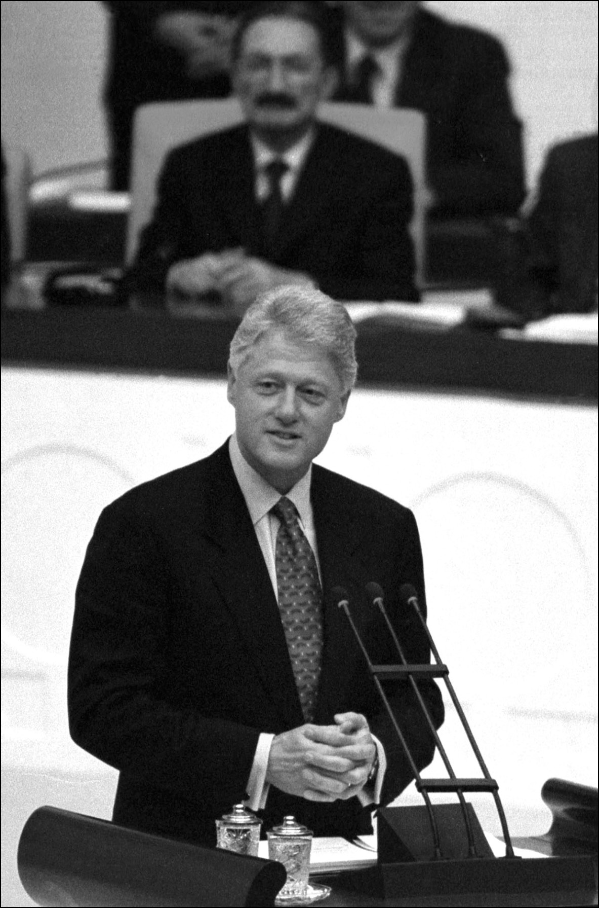
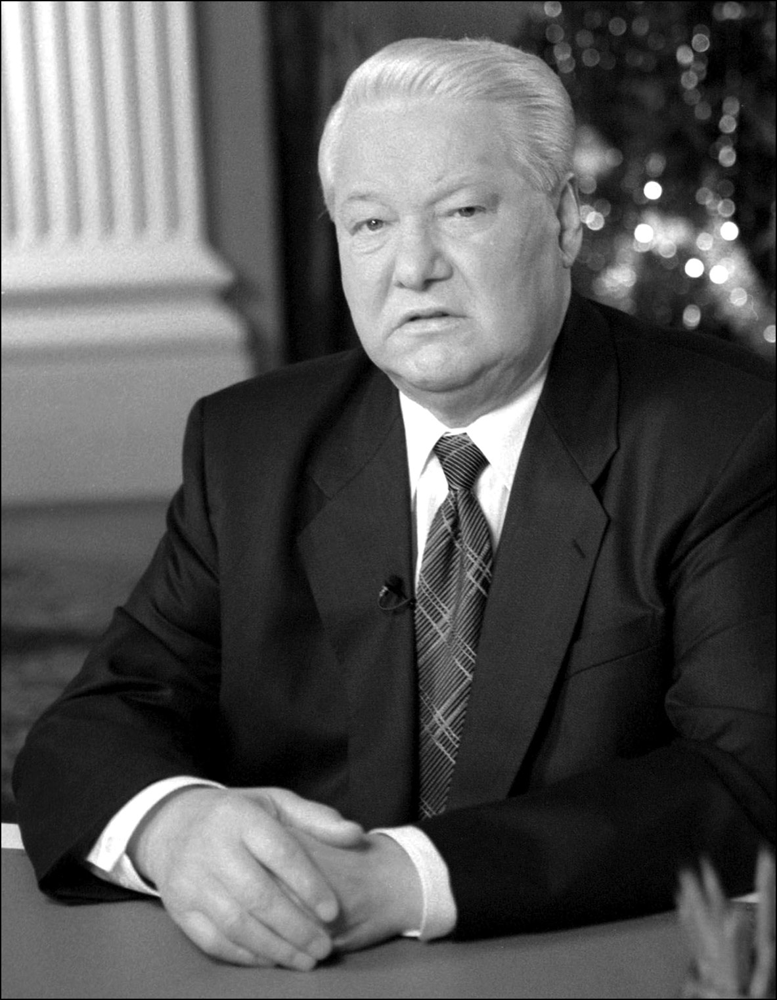
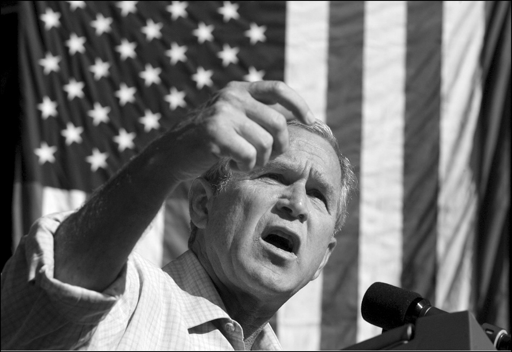
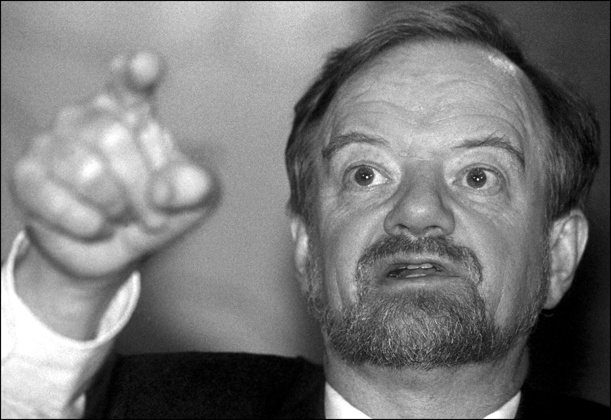

Mihail GORBAÇOV
“Artık yeni bir dünyada yaşıyoruz.”
26 Aralık 1991’de Sovyetler Birliği Komünist Partisi Genel Sekreteri Mihail S. Gorbaçov, Komünist Rusya’nın 11. ve son devlet başkanı olarak görevinden istifa etti. Aynı gün, Kremlin Sarayı üzerinde dalgalanan orak-çekiçli bayrak, yerini geleneksel beyaz, mavi ve kırmızı Rus bayrağına bıraktı. 31 Aralık’ta ise Sovyetler Birliği lağvedildi.
Gorbaçov, 1985’te Politbüro’nun en genç üyesi olmasına rağmen, Konstantin Chernenko’nun ardından Komünist Parti Genel Sekreterliği’ne getirilmişti. Ekonomik ve politik sorunlarla hantallaşmış bir Sovyetler Birliği devralan Gorbaçov, Sovyet sosyalizmine ve topluma yeniden canlılık kazandırma hamlesine girişerek, açıklık (glasnost) ve yeniden yapılanma (perestroika) olarak bilinen politikaları uygulamaya koydu. Dış politikada Amerika ile ilişkileri hızlı bir şekilde geliştirdi ve Afganistan’daki 10 yıllık Rus işgalini sona erdirdi.
1989’da Doğu Avrupa’da başlayan seri demokratikleşme girişimlerine müdahale etmemeyi tercih eden Gorbaçov, Afganistan’dan Rus askerlerini de çekmesiyle birlikte 1990 Nobel Barış Ödülü’ne layık görüldü. Ancak 1991 Ağustos’unda Sovyet hükümetindeki komünist tutucular, darbe yaparak Gorbaçov’u Sochi’deki yazlığında göz altına aldılar. Fakat Rusya Başkanı Boris Yeltsin’in önderlik ettiği halk hareketinin tutması sayesinde Gorbaçov güvenli bir şekilde Moskova’ya dönebildi.
Başarısız darbe girişiminin ardından Gorbaçov, Komünist Parti Genel Sekreteri olarak istifa etti. Hükümetin kontrolü demokrat bir zihniyete sahip ve halkın çoğunluğu tarafından seçilmiş Yeltsin’e geçti. Yeltsin, Gorbaçov’un bu istifasının ardından tek yetkili Rus lider olarak ülke yönetimini devraldı.

Kaynak: Associated Press.
İcraatlarıyla ülkesi Sovyetler Birliği’ni, dolayısıyla da dünyadaki iki kutuplu politik gidişatı değiştiren Gorbaçov, 26 Aralık 1991’de Sovyet devlet televizyonundan da canlı yayınlanan tarihî konuşmasında, bir Komünist Parti Genel Sekreteri’nin ağzından çıkacağına asla inanılmayan şu cümleleri sarf ediyor ve bir bakıma Sovyetler Birliği’nin ölüm fermanını imzalıyordu:
* * *
Komünist Parti Genel Sekreteri olarak istifa ederek, bir bakıma Genel Sekreterlik makamını lağveden ve Sovyetler Birliği’nin dağılmasına kapı aralayan Gorbaçov’un istifa konuşmasından.
“Sevgili Vatandaşlarım! Yoldaşlar!
Mevcut durumu ve Bağımsız Devletler Topluluğu’nun kurulmasını göz önünde bulundurarak, Sovyetler Birliği Devlet Başkanlığı görevimi bırakıyorum. Birtakım prensiplerden dolayı bu kararı aldım.
Cumhuriyetlerin özerkliği ve ulusların bağımsızlığı lehindeki düşüncelerimi her zaman kararlı bir şekilde dile getirdim. Ama aynı zamanda birleşik bir devletin korunmasını ve ülkenin bütünlüğünü de destekledim.
Fakat olaylar farklı bir şekilde gelişti. Ülkenin parçalara ayrılması ve devletin bütünlüğünün bozulması şeklinde ortaya çıkan, kabul edemediğim bu eğilim başarılı oldu. Bu konudaki tavrım, Alma Ata Konferansı ve orada alınan kararlardan sonra da değişmiş değil. Daha da ötesi, böylesine önemli kararların halkın iradesi ile alınması gerektiğini düşünüyorum. Yine de, Alma Ata Anlaşmalarının, kararlı bir reform sürecine imkân tanıyarak, toplumumuza gerçek bir birlik sunması ve krizden çıkma yolunu göstermesi için elimden geleni yapacağım.
SSCB Devlet Başkanı olarak size son kez seslenirken, 1985’ten bu yana yol aldığımız istikamete yönelik pozisyonumu vurgulamam gerektiğini düşünüyorum. Özellikle de bu konudaki tartışmalı, yüzeysel ve önyargılı hükümleri göz önüne aldığımda.
Bu yaşananlar zaten kaderimizde vardı. Devletin başına geçtiğimde, bu ülkede yanlış giden bir şeyler olduğu gayet net olarak görünüyordu. Her şeyimiz fazlası ile var; toprak, petrol, gaz ve diğer doğal kaynaklar. Tanrı aynı zamanda bize zeka ve yetenek konusunda da cömert davranmış. Buna rağmen, diğer sanayileşmiş ülkelerdeki insanlardan çok daha kötü bir şekilde yaşıyoruz. Ve aradaki mesafe sürekli artıyor. Bunun sebebi daha o zaman bile ortadaydı. Toplumumuz, bürokratik komuta sisteminin kontrolünde boğulmuştu. İdeolojiye hizmet etmeye ve silahlanma yarışının ağır yükünü omuzlamaya mahkum olduğu için, son noktasına kadar zorlanmıştı. Sayısı bir hayli fazla göstermelik reformları hayata geçirme çabaları bir biri ardına başarısız oldu. Ülke ümidini kaybediyordu. Böyle yaşamaya devam edemezdik. Her şeyi radikal bir şekilde değiştirmek zorunda kaldık. Bundan dolayı, birkaç yıl daha ‘hüküm sürmek’ için Genel Sekreter olarak yetkimi kullanmadığım için hiçbir zaman pişmanlık duymadım. Bu, sorumsuzluk ve ahlaksızlık olurdu. Bizimki kadar geniş ölçekli bir toplumda reformları hayata geçirmenin çok zor bir iş ve riskli bir girişim olduğunu anladım. Ama şimdi bile, 1985 baharında başlatılan demokratik reformların, tarihî açıdan bakıldığında haklı görüldüklerine eminim.
Bu ülkeyi yenileme ve uluslararası toplumda köklü değişiklikler yaratma sürecinin başlangıçta hesaplanandan daha karışık olduğu doğrulanmış oldu. Yine de gelin, şu ana kadar başarılanlara bir bakalım. Toplum, özgürlüğünü kazandı; politik olarak ve ruhen özgürleştirildi. Kısmen, özgürlüğümüzü nasıl kullanacağımızı henüz öğrenemediğimiz için, bu en önemli başarıyla şu ana kadar yeteri kadar ilgilenemedik. Yine de tarihî bir görev tamamlanmış oldu. Çok uzun bir süre önce bu ülkenin zengin ve bereketli bir yurt olmasını engelleyen totaliter sistem ilga edildi. Demokratik reformlara giden yolda bir devrim yaratıldı. Özgür seçimler, basın özgürlüğü, inanç özgürlüğü, temsilci organlar ve çok partili sistem gerçekliğe dönüştü. Çoğulcu bir ekonomiyi gerçekleştirme yolunda adımlar attık. Mülkiyet hakkının tüm çeşitleri hayata geçiriliyor. Toprak reformu sürecinde, çiftçilik canlanmaya, özel çiftlikler ortaya çıkmaya başladı. Milyonlarca hektar toprak, kırsal nüfusa ve kentteki nüfusa tahsis edildi. Üreticilerin ekonomik özgürlüğünü hedefleyen kanunlar çıkarıldı. Serbest teşebbüs, hisse ortaklığı ve özelleştirme kanunları da yolda.
Ekonomimizin istikametini bir serbest pazar ekonomisine çevirirken, bunun bireyin çıkarı için yapıldığını unutmamalıyız. Bu zor zamanlarda, bireyin, özellikle de yaşlıların ve çocukların sosyal güvenceye alınması için her şey yapılmalıdır. Artık yeni bir dünyada yaşıyoruz. Ve, ekonomimizi yerle bir eden, düşünce tarzımızı iğdiş eden ve moralimizi ayaklar altına alan Soğuk Savaş’a, silahlanma yarışına ve ülkemizin çılgınca militarize edilmesine bir nokta konuldu. Bir kez daha vurgulamak isterim ki, bu geçiş döneminde, nükleer silahların güvenli bir şekilde kontrol altına alınması için elimden geleni yaptım.
Kendimizi dünyanın geri kalanına açtık, başkalarının iç işlerine karışmaktan ve sınırlarımızın ötesinde birlik bulundurmaktan vazgeçtiğimizi ilan ettik. Buna karşılık güven, dayanışma ve saygınlık kazandık. Modern dünyanın barışçıl ve demokratik prensipler temelinde yeniden organize edilmesi için önde gelen dayanak noktalarından biri olduk. Bu ülkenin ulusları ve insanları, tercihlerini self-determinasyon yönünde yapma açısından eşsiz bir özgürlüğe kavuştular. Çok uluslu devletimizin demokratik bir reforma tabi tutulması yönündeki arayış, bizi yeni bir Birlik Anlaşması imzalama noktasına kadar getirdi. Tüm bu değişiklikler en üst derecede gayret gösterilmesini gerektirdi ve ideolojik kalıplarımıza, ataerkilliğe ve asalaklığa alışkın psikolojimize, eski parti ve devlet organları ile ekonomik yönetim aygıtlarının yanı sıra eski, modası geçmiş ve tepkisel güçlerin artan direnişine karşı verilen kesintisiz mücadele koşullarında gerçekleştirildi. Değişim süreci, hoşgörüsüzlüğümüze, düşük seviyeli bir politik kültüre ve değişim korkusuna karşı mücadele etti. Bundan dolayı bu kadar fazla zaman kaybettik. Yenisi işlemeye başlamadan önce eskisi tepe taklak oldu. Ve toplum, daha derin bir krizin içine düştü.
Bugünkü vahim durumdan duyulan hoşnutsuzluğun farkındayım, her kademeden yöneticilere ve benim şahsî rolüme yönelik ağır eleştirilerin farkındayım. Ama bir kez daha vurgulamak isterim ki, geçmişini de göz önünde bulundurursak, böylesi büyük bir ülkede zorluk yaşanmadan ve acı çekilmeden köklü değişiklikler gerçekleştirilemez. Ağustos darbesi, tüm bu eleştirileri bir kırılma noktasına getirdi. Bu krizin en kaotik boyutu, devlet olma kavramının çökmesi oldu. Ve bugün, endişeli bir şekilde, vatandaşlarımızın görkemli bir ülkenin vatandaşlığını kaybetmesini izliyorum. Bunun sonuçları hepimiz için vahim olabilir.
Son beş yıldaki demokratik kazanımların devam ettirilmesinin hayatî öneme sahip olduğunu düşünüyorum. Bütün bunları, tüm tarihimiz boyunca çektiğimiz sıkıntılar ve trajik deneyimlerimiz sonucunda kazandık. Hiçbir bahane ile ve hiçbir koşulda onlardan vazgeçmemeliyiz. Aksi takdirde daha iyi bir geleceğe yönelik tüm umutlarımız gömülmüş olacak. Gayet samimi ve dürüst bir şekilde konuşuyorum. Bu, ahlakî görevim.
Bugün ülkemizi yenileme politikasına destek veren ve demokratik reformlara katılım gösteren tüm vatandaşlara minnettarlığımı dile getirmek istiyorum. Devlet adamlarına, politikacılara ve kamuoyu liderlerine ve diğer ülkelerdeki milyonlarca sıradan vatandaşa, amaçlarımızı anlayan ve bize destek veren, bizi yarı yolda karşılayan ve eşsiz desteğini sunan herkese minnettarım.
Görevimden endişe içinde ama aynı zamanda size, bilgeliğinize ve ruhanî gücünüze olan inancımla ve duyduğum ümitle ayrılıyorum. Bizler, görkemli bir medeniyetin mirasçılarıyız. Bunun tekrar dirilmesi ve modern ve asil bir yaşama dönüşümü hepimize ve her birimize bağlı.
Tüm bu geçen yıllar içinde haklı davamızı savunarak bana destek verenlere en kalbî teşekkürlerimi sunmak isterim. Muhakkak ki bazı hatalardan kaçınabilir ve birçok açıdan daha iyi şeyler yapabilirdik. Ama eminim ki, er ya da geç, ortak gayretlerimiz meyvesini verecek ve halklarımız, demokratik bir refah toplumunda yaşayacaktır.
Herkese her şeyin en iyisini dilerim.”
26 Aralık 1991
İzak RABİN
“Bu kadar kan ve gözyaşı yeter!”
İsrail Başbakanı İzak Rabin’in 13 Eylül 1993’te Washington D.C.’de İsrail ve Filistin arasında imzalanan Prensipler Deklarasyonu’nun imza töreninde yaptığı konuşmadan.
1992’de İzhak Rabin liderliğindeki solcu İşçi Partisi’nin İsrail’deki seçimleri kazanması, 1990’lara damgasını vuran İsrail-Arap barış görüşmelerini tetiklemişti.
Üyeleri arasında Şimon Peres ve Yossi Beilin gibi Şahinleri de barındıran hükümet, Filistinlilerle barışı konuşmak için ilk kez ciddi bir şekilde masadaki yerini almıştı. Bu esnada 1. Körfez Savaşı sonucu pozisyonu zayıflamış olan Filistin Kurtuluş Örgütü de (FKÖ) barış görüşmelerine taraftardı.
İsrail Washington’daki iki taraflı görüşmelere katılacak olan FKÖ katılımcılarına yönelik yasağı kaldırdı. Daha da ötesi Dışişleri Bakanı Peres, Norveç’in girişimi ile başlatılacak bir dizi gizli görüşme için zemin yoklaması yaptı. Bir sonuç getirmeyen Washington’daki ikili görüşmelerin ardından, 20 Ocak 1993’te Norveç’in Sarpsborg kasabasında taraflar arasındaki gizli görüşmeler dizisi başladı.
Filistin tarafı, İsrail işgalinin kademeli olarak kaldırılması karşılığında, İsrail’in varlığını tanımaya razı oldu. Görüşmeler sonucunda şekillenen Prensipler Deklarasyonu, 13 Eylül 1993’te Beyaz Saray bahçesinde, ABD Başkanı Bill Clinton’ın gözetiminde, dünya genelinde 400 milyon kişinin canlı yayında izlediği bir törenle FKÖ Lideri Yaser Arafat ile İsrail Başbakanı İzhak Rabin tarafından imzalandı. İmzanın ardından, yıllarca birbirine karşı savaşan Arafat ve Rabin, ilk kez tokalaştı.
Rabin, imza töreni öncesinde, asırlardan bu yana süregelen bu husumete yeni bir boyut getiren ve belki de birkaç yıl sonra İsrailli bir radikal tarafından öldürülmesine zemin hazırlayan tarihî konuşmasında bakın neler diyordu:
* * *
“Başkan Clinton, Ekselansları, Bayanlar ve Baylar,
Bugün burada İsrail-Filistin Prensipler Deklarasyonu’nun imzalanması, ne İsrail’in savaşlarında asker olarak görev yapan benim için ne de İsrail halkı için o kadar kolay. Ve tabii ki şu an bizi tedirginlikle karışık büyük bir ümitle izleyen Diaspora’daki Yahudi halkı için de.
Şiddet, terör ve savaş kurbanlarının, acıları asla dinmeyecek olan aileleri için de kesinlikle kolay değil. Hayatları ile hayatlarımızı koruyan, hatta hayatlarımız için hayatlarını feda eden binlercesi açısından bu tören oldukça gecikti.
Bugün, barış ve hatta şiddete ve savaşlara son verme fırsatının arefesinde, bu insanların her birini sonsuza dek sürecek bir sevgiyle anıyoruz.
Kudüs’ten, Yahudi halkının kadim ve daimî başkentinden geldik. Acı çeken ve yas tutan topraklardan geldik. Çocukları için ağlamadığı tek bir yılı, hatta tek bir ayı bile bilmeyen bir halktan, bir evden, bir aileden geldik. Düşmanlıklara bir son vermeyi denemek için geldik. Geldik ki, çocuklarımız ve çocuklarımızın çocukları savaşın, şiddetin ve terörün acı veren deneyimlerini daha fazla yaşamak zorunda kalmasınlar. Hayatlarını güvence altına almak, kederleri dindirmek ve geçmişin acı veren hatıralarını azaltmak, barışı ümit etmek ve onun için dua etmeye geldik.

Kaynak: Reuters
Size seslenmeme izin verin Filistinliler; aynı ülkenin aynı toprakları üzerinde birlikte yaşamak kaderimiz. Kana bulanmış savaştan dönen biz askerler, gözleri önünde akrabaları ve dostları öldürülmüş bizler, onların cenaze törenlerine katılan ve ebeveynlerinin gözlerine bakamayan bizler, ana babaların çocuklarını gömdükleri topraklardan gelen bizler, siz Filistinlilere karşı savaşan bizler, size bugün yüksek sesle ve net bir şekilde sesleniyoruz: Bu kadar kan ve gözyaşı yeter! Yeter.!
İntikam alma arzumuz yok. Size karşı nefret beslemiyoruz. Bizler de, sizler gibi, bir ev inşa etmek isteyen; ağaç dikmek isteyen; sevmek isteyen; insan olarak, özgür insanlar olarak, bereket ve barış içerisinde sizlerle yan yana yaşamak isteyen insanlarız. Bugün barışa bir şans veriyor ve sizlere tekrar sesleniyoruz: Gelin, silahlara veda edeceğimiz bir günün gelmesi için dua edelim.
Yaşamlarımızın ortak acı defterinde yeni bir bölüm açmayı arzu ediyoruz; -karşılıklı kabullenmeye, iyi komşuluğa, karşılıklı saygı ve anlayışa dayalı yeni bir sayfa. Ortadoğu’nun tarihinde yeni bir döneme adım atmayı ümit ediyoruz.
Bugün burada, Washington’da, Beyaz Saray’da, halklar arasındaki ilişkilerde, savaş yorgunu ana babalar arasında, savaşı bilmeyecek çocuklar arasında yeni bir hesap açacağız.
Birleşik Devletler Başkanı, Bayanlar ve Baylar!
Manevî gücümüz, yüksek ahlakî değerlerimiz binlerce yıldan bu yana kitapların kitabından akıp geliyor. Bu kitabın bir ayeti şöyle der: ‘Her şeyin bir mevsimi, gökyüzünün altındaki her niyetin bir zamanı vardır; doğmanın bir zamanı, ölmenin bir zamanı, öldürmenin bir zamanı, iyileştirmenin bir zamanı, ağlamanın bir zamanı, gülmenin bir zamanı, sevmenin bir zamanı, nefret etmenin bir zamanı, savaşın bir zamanı, barışın bir zamanı.’
Bayanlar, Baylar! Barışın zamanı geldi.
İki gün içerisinde Yahudi halkı yeni bir yılın başlangıcını kutlayacak. Bu yeni yılın tüm halklara bir kurtuluş mesajı getireceğine; sizin için, hepiniz için iyi bir yıl olacağına inanıyor, ümit ediyor ve dua ediyorum.
İsrailliler ve Filistinliler için iyi bir yıl. Ortadoğu halkları için iyi bir yıl. Barışı böylesine çok isteyen ve gerçekleşmesi için gayret gösteren Amerikalı dostlarımız, sizler için; önceki yönetimlerin başkanları ve üyeleri için; özellikle de siz ve de ekibiniz için sayın Clinton; dünyanın tüm vatandaşlarına iyi bir yıl diliyorum: Barış hepinizin evini doldursun.
Yahudi geleneğine göre; duaları ‘amen’ diyerek tamamlamak âdettir. İzninizle, barışın insanları, Yahudilerin her gün okudukları bir duadan yapacağım alıntıyla tamamlamak istiyor ve tüm dinleyicilerden ‘amen’ derken bana katılmalarını istiyorum.
‘Yüksek cennetlerinde barışı yapan Tanrım, hepimize ve tüm İsrail’e huzur versin. Amen.’”
13 Eylül 1993
Aliya İzzet BEGOVİÇ
“Bizler insan olmaya ve insan kalmaya çalıştık ve başarılı olduk.”
Bosna Hersek’in Bilge Kralı Aliya İzzet Begoviç… Azim ve kararlılığın sembolü efsanevî lider... Çile ve mücadeleyle geçmiş hayatı boyunca, büyük trajedilere sebep olan olaylar karşısında bir insanın nasıl böyle soğukkanlı kalabildiğine hayret ediyorsunuz... Bir mütefekkir olarak, acıyı tatmış halkına yaşama sevinci aşılarken, cephede askerlerini yüreklendirirken, parti kongresinde arkadaşlarıyla sohbet ederken yaptığı konuşmalar; olaylara bakışı; gelişmeleri değerlendirme ve yorumlama tarzıyla daima ufuk açıcı...
Kıt imkânlarla mücadele etmeye çalışan halkına ve askerlerine moral verme gayreti, konuşmalarının özünü teşkil ediyor. Onun insanlara güven telkin eden bu yönünü oğlu Bağır Begoviç şu şekilde ifade ediyor: “Maddî ve manevî sıkıntılarımız oldu. En bunalımlı zamanlarda babamı ziyaret ettiğimde öyle şeyler söylerdi ki eve yüzüm gülerek ve büyük bir moralle dönerdim.”

Aliya’nın Demokratik Eylem Partisi’nin (SDA) 25 Mart 1994’teki kongresinde yaptığı konuşma, ruh dünyasının inceliklerini gözler önüne seriyor... Aliya, Yugoslavya dağıldıktan sonra ortaya çıkan korkunç karmaşayı, Sırp Çetniklerin ve Hırvat Ustaşaların giriştiği soykırımı anlattığı konuşmasında SDA’nın önemine değiniyor. SDA’nın Yugoslavya Müslümanlarının uyanışında oynadığı tarihî rolü anlatıyor. AB, BM gibi uluslararası kuruluşlar ile yaptığı temaslardan sonra vardığı sonuç; Batı’nın sözüne güvenilmeyeceği... Boşnak halkına reva görülen zulmün asla unutulmamasını istiyor Aliya İzzet. Sanırız bu konuşması, bu önemli isteğini ifade etmek için yeterli...
* * *
“Sevgili Kardeşlerim,
Bayanlar ve Baylar,
Sevgili Dostlar, Değerli Konuklar,
Başkanın sahneyi öncelikle konuklara terk etmesi gerektiğini düşünmüştüm. Ancak diğer konuşmacıları ve yapmaları muhtemel bazı eleştirileri dinlemek istememe rağmen, konuşmak üzere davet edilmem sebebiyle konuşacağım…
Bir şeyler söylemeden önce duvarlardaki resimlerimin oralara benim onayım olmaksızın asıldığını zikretmek istiyorum ve verilecek ilk arada, duvarlardan kaldırılmalarını rica ediyorum. Bu bir sahte tevazu sorunu değil. Basitçe söylemek gerekirse, bu bizim âdetimiz değil. Umarım benimle aynı fikirdesinizdir.
Evet, bugünlerde ya da daha kesin bir tarih vermek gerekirse, yarından sonraki gün; 40 entelektüelin, 40 yıllık tek parti sisteminden sonra hayata geçen ilk siyasî partiyi kurduklarını kamuoyuna açıklayışlarının dördüncü yıldönümü yaşanacak. Bu açıklama bu binada 27 Mart 1990’da yapıldı. Bunun üzerinden dört uzun yıl geçti… Pek çok olay oldu ve yalnızca Bosna-Hersek’te değil, tüm dünya çapında yaşanan olaylarda bir yoğunluk duygusu hakim. Özellikle, Bosna-Hersek’te... Burada yaşananlar çok sarsıcıydı. Eski Yugoslavya’nın ortadan kalkışı ile birlikte, bir başka büyük olay gerçekleşti. Sovyetler Birliği dağıldı. Bu eski Yugoslavya’nın ortadan kalkışından daha sessiz oldu. Bunlar, başlıca iki etki, ya da aslını söylemek gerekirse yıkıcı bir gücün yarattığı iki politik depremdi. Bu olayların merkezinde ise bu ülke, yani Bosna-Hersek vardı.
….Halkımızla birlikte, çok zor, fazlasıyla zor bir döneme giriyoruz. Ancak sizin de gördüğünüz gibi tahammül ediyoruz. Bu, bizim neslimize kısmet oldu. Çünkü insanlar doğum yerlerini ve zamanlarını tayin edemezler. Bizler bu sorumluluğu taşımak üzere doğduk ve onu taşımaya devam edeceğiz. Kimi pes etti, kimi tahammül etti, kimi şerefiyle öldü ve kimi de sorumluluğu taşımaya devam etti. Bu sorumluluğu en sonuna kadar taşıyanlardan olmamızı umuyor ve arzuluyorum. Bu sıkıntılı ve dikenli yolun yarısından fazlasını ardımızda bıraktığımıza inanmak istiyorum. Tünelin sonunda, uzakta bir ışık görünüyor. Bunun böyle olduğu yolunda yaygın bir inanış var. Bu toplantıyı iki ya da üç ay önce gerçekleştirmiş olsaydık, inanıyorum ki benim ve sizlerin konuşmalarınızda daha karamsar bir hava hakim olacaktı. Şu anda en azından bir çıkış yolu görüyoruz. Sanki dağın zirvesine ulaşmayı başaracak gibiyiz. Olaylar yavaş yavaş bizim lehimize dönüyor. Ve şimdi bu durumu bir sona bağlamak için hem cesarete hem de ferasete ihtiyacımız var.
Geride bıraktıklarımızı ve imza koyduklarımızı incelediğimizde, bazı insanların oldukça eleştirel bir yaklaşıma sahip olduklarını, “Öyle ya da böyle bunu yapmalıydık” dediklerini görebiliriz. Son imzaladığımız belgelere başvuruyorlar ve iyi olmayan –benim de hiç iyi bulmadığım– bazı ibareler buluyorlar. İyi olmayan, benim de iyi bulmadığım çözümlere rastlıyorlar. Ancak bir bütün olarak sonucu takdir etmiyorlar. Şunu söylemeliyim ki bardağın boş tarafını görmek gibi bir temayülümüz var. Bardağın boş tarafını ben de görüyorum; ancak problem, onların yalnızca boş tarafa bakmaları ve bardağın tamamını görmemeleri.
Burada, bu konuyu çokça konuşmamız gerektiğini düşünüyorum. Son temaslarımızla ve anlaşmalarımızla bağlantılı somut bazı belgeler olacak. Bunun bir politik zafer olduğunu söylerken haklı olduğuma inanıyorum.
Elbette diplomasi, insanların dediği gibi, askerî durumun yansımasıdır. Bu bizim politik başarımızdır. Bunu unutmamalıyız. Bu askerî çabamızın bir sonucudur ve askerî durumun sonucu bunu mümkün kılmıştır. Ordumuzdan bahsetmişken, burada hazır bulunan üniformalı ve üniformasız çok sayıda askerimiz için sizden bir alkış isteyeceğim.
Olayların, gerçekten, iyinin ve kötünün zorlu bir mücadelesi olduğundan söz ettim. Bosna bana inanılmaz bir zıtlıklar arenası gibi görünüyor. Burada iyi ile kötü, en açık ve yoğunlaştırılmış biçimleriyle karşı karşıyalar. Bosna’nın ahlakî bir meseleye, belki de günümüz dünyasının can alıcı bir ahlakî ikilemine dönüşmesinin nedeni budur. Bu iki yıllık süre zarfında ve savaş devam ederken dünya yavaş yavaş Bosna’ya karşı olanlar ve Bosna’nın yanında olanlar diye taraflara ayrıldı. Kimse tarafsız değil böylesi bir durumda, kimse tarafsız da olamaz. Ya Bosna’nın yanındalar ya da karşısında. Hiç kimse bu tarafları ortadan kaldıramaz. Safların belirginleşmesi aşamasını ele aldığınızda göreceksiniz, dünyada iyi olan ne varsa, Allah’a şükürler olsun ki bizim yanımızda.
Bazı ülkelerin hükümetleri söz konusu olduğunda, zaman zaman onların aşağılık politikacılarının karşımızda yer aldığı dikkat çekiyor. Ancak o ülkelerin de aydınları, idealistleri, şairleri ve sanatçıları bizimle beraber. Tüm İslam âlemi ise başlangıçtan bu yana arkamızda ve bu başka bir hikâye.
Örneğin, Kış Olimpiyat Oyunlarının açılışını hatırlayın. Herkes Saraybosna şerefine ayağa kalktı ve Saraybosna’da yaşayanlar ve ölenler için bir dakikalık saygı duruşu yapıldı. Tahminlere göre iki buçuk milyon insan bu sahneyi izliyordu. Herkesin kalbi Saraybosna ileydi ve açılışa geç kalan Olimpiyat Oyunları Komitesi Başkanı Samaran, evlerinde bu görüntüleri izleyen pek çok insanın Saraybosna için nasıl ayağa kalktığını, daha sonraki Saraybosna seyahatinde bana anlattı.
Saraybosna’dan söz ederken, Bosna’nın bütünüyle iyinin ve kötünün mücadele alanı olduğunu söylemiştim. Dünya, Saraybosna’yı –her ne kadar ben bu kentin, direnişin sembolü olarak hatırlanmasını tercih etsem de– acının sembolü olarak hatırlayacak. Üzerimize, yedi yüz bin bombanın düştüğünü söylüyorlar. Bu, insan varlığının direnişine bir imtihan oldu. Bu imtihana katlanmamızı sağladığı için Allah’a şükürler olsun. Bu şunun kanıtı; önemli olan, bir insanın dövüşmek için ne denli kuvvetli olduğu değil, sizlerin mücadeleyi omuzlamak için ne kadar güçlü olduğunuzdur. Yabancılar savaştan önce Saraybosna’ya geldiklerinde, dikkatlerini gururla, burada yüzyıllarca hakim olmuş insanlık ve hoşgörünün taştan tanıklarını barındıran avluya çekerdim. Burası; Bey Camii, Katolik Katedrali, Eski Ortodoks Kilisesi ve Sinagogun bir arada bulunduğu, hiçbirinin diğerinin yoluna çıkmadığı ve kutsiyetine karışmadığı küçük bir alan. İnsanlar genelde, hoşgörünün Fransız Devrimi ile başlayan yakın bir dönemin ürünü olduğunu düşünüyorlar. Ancak hoşgörü Fransız Devrimi ile değil, çok daha önce başladı. Bu kutsal mabetlerin kimi, Fransız Devrimi’nden daha yaşlı. Gördüğünüz gibi burayı, elbette ki haklı bir gururla, yabancılara göstermek için elime geçen tüm fırsatları kullandım. Tenakuzlardan bahsetmişken, şu anda Saraybosna’da görebileceğiniz tenakuz nedir? Eski askerî hastane... Eski askerî hastaneyi 160 kez bombaladıklarını söylüyorlar.
Birkaç gün önce, Fransız Bakan Leotar –çalışma arkadaşlarından bir grupla birlikte– ziyaretime geldi ve ona şöyle dedim: “Hastaneyi görme fırsatını kaçırmayın, çünkü o eşsiz bir bina. Kasıtlı olarak 160 kez bombalanmış bir hastaneyi bundan önce hiçbir zaman görme şansı bulamadığınızı kabul ediniz lütfen. Bu, tarihte yalnızca bir kez ve yalnızca Saraybosna’da oldu. Onu görme fırsatını kaçırmayın.”
Saraybosna’da olanlar, bir yönü ile aklıselim ile çılgınlığın mücadelesidir. Şundan söz ediyorum: Avlu, aklıselimi; hastane ise en kötü biçimi ile çılgınlığı temsil ediyor. Konuğuma ayrıca Hükümet Konağı’nı ve Millî Kütüphane’yi görmesini de tavsiye ettim. Tepelerdeki barbarlar dışında herkesin hayranlığını kazanan muhteşem binalardı bunlar. Eğer mümkünse valilikten bu iki binayı çılgınlığın anıtları olarak öylece bırakmalarını isteyeceğim. Çünkü eğer onarırsak, insanlar böyle bir şeyin olabildiğine inanmayacaklardır. Eğer bu mümkün değilse, hiç değilse insanların Hastane’ye ve Milli Kütüphane’ye neler olduğunu bilmeleri için onların birer kopyasını inşa edelim. Sözünü ettiğim çelişkiler bunlar. Bir tarafta kültür ve insanlığın cisimleşmiş hali, diğer tarafta utanç ve barbarlığın kanıtları.
…Bosna ahlakî bir meseledir ve ahlakî meseleler her erkeği ve kadını ilgilendiren evrensel meselelerdir. Batı dünyası ve İslam dünyası ise başka bir meseledir. İslam dünyasında Fas’tan Endonezya’ya kadar geniş bir coğrafya olmanın yanında; yığınla ırk, halk ve bilhassa etki söz konusudur. Bu, dünyanın bu bölümünün neden daima kesin bir ayrılıkla imlendiğini açıklar. Bu durum yakın zamana, Bosna’ya kadar böyleydi. Bosna, Müslümanları bir araya getirdi. İslam dünyası hiçbir zaman, hatta Filistin sorununda bile Bosna meselesinde olduğu kadar birlik içerisinde davranmamıştı. Bosna meselesi ile ilgili Fas’ta, Mısır’da, Suudi Arabistan’da, İran’da, Pakistan’da, Malezya’da, Endonezya’da karşılaşacağınız şey, aynı saygı, aynı yardım için hazır olma durumu ve aynı birlik ruhudur. Bosna’ya duyulan sempati ve hassasiyet her yerde aynıdır. Tüm dünya tek bir mesele üzerinde, Bosna üzerinde birleşti. Bir uyanış, dayanışma ve kesin bir birleşme süreci başladı.
Böylesi bir duygunun varlığını ortaya koyan şey, her şeyden önce düşmana gösterdiğimiz inatçı direniş oldu. Evet gördüğünüz gibi, bugün aramızda –umarım buradadırlar- Stari Vitez’den gelen insanlar var. Gelmeyi başarıp başaramadıklarını bilmiyorum. Profesör Kaimoviç buraya ulaşmayı başarabildi mi? Bin üç yüz erkek, kadın ve çocuk on buçuk aydır Stari Vitez’de direnişteler. Teslim olmadılar, pes etmediler ve direnişe devam ettiler. Bu, pek çok benzer durumdan sadece biri. Diğer biri çok daha iyi bilinen Gorazde, ardından Maglaj ve şimdi de Bihaç, Brçko ve Olovo... Bu meşhur cephelerden bazılarını unutmuş olmaktan endişe ediyorum. Evet, bir süre önce kendilerinden bahsetmeyi bıraktığımız Gornji Vakuf ve Zepa da var. Ve nihayet, Saraybosna. Ancak Saraybosna birinci değil. Çünkü çok daha zor durumlar oldu.
Evet, bizler direndik ve her objektif araştırmacı bu direnişin temelinin dört yıl önceki bir olayla atıldığını söyleyecektir. Bu olay, Müslüman halkı bir araya gelmeye ve birleşmeye davet eden ve gelecek olaylara hazır bulunan 40 kişinin ortaya koyduğu bildiriydi. Bu toplantımız, bu yönüyle de bir çeşit yıldönümü.
Kendimize sık sık soruyoruz. Tüm bu olanlardan sonra Bosna ne durumdadır? Bugün Bosna nedir? Bosna’nın bugün ne olmadığını kesinlikle söyleyebilirim. O, dünkü ya da çok uzun zaman önceki Bosna değil. İyi ya da kötü olduğuna bakmaksızın, Bosna bugün başka bir şey, ülkemiz değişti artık. 200.000 insan öldürüldü, en abartısız tahminlere göre 600.000 insan yurdundan sürüldü, 800 cami yıkıldı, yüzlerce kasaba ve köy yerle bir edildi. Tüm bunların sonucunda, insanların hissiyatı değişti. Bosna daha iyi ya da daha kötü olabilir, ancak kesinlikle farklı olacak. Doğal olarak bizler daha iyi olmasını istiyor ve buna inanıyoruz. Şu anda Bosna’nın mevcut sınırlarını korumak için mücadele veriyoruz. Bu bizim hakkımız ve bunun için çalışmaya devam edeceğiz. Ancak tüm hesaplamalarımız ve tahlillerimizde bu muazzam değişmenin yer alacağını aklımızda tutmamız gerekmektedir. Ciddi insanların yapacağı gibi bunu hesaba katmak zorundayız.
Şu ana kadar söylediklerim; yani ölümler, sürgünler ve Bosna’nın küçük olmayan bir parçasının sınırlarımız dışında kalması, elbette sorunun olumsuz yönüydü. Ancak her şeye rağmen Bosna sessizce düşmedi. “Sessizce” kelimesinin nereden geldiğini ve Bosna’nın sessiz düşüşü hikâyesini biliyor musunuz? Bu, 1939 olayları ile bağlantılı. O zaman Bosna, gerçekten sessizce düşmüştü. Sırplar ve Hırvatlar, Bosna’yı ikiye ayırmaya karar verdiklerinde hiçbir direnişle karşılaşmamışlar. Herhangi bir direniş olup olmadığını öğrenmeye çalıştım. Aslına bakılırsa, hiçbir direniş olmamış. Hatta hiçbir ciddi protesto bile olamamış. Bosna’nın bu utanç verici bölünüşü ile ilgili olarak basında birkaç eleştiri çıkmış yalnızca.
Evet, işlerin nasıl değiştiğini görüyorsunuz. Bosna’yı tekrar parçalamayı denediler. Ancak bu kez, Bosna sessizce düşmedi. Direniş çığlığımız, gezegenin her tarafından duyuldu ve tüm gökyüzünü inletti. Neredeyse gerçek manasıyla. Bosna’yı dize getirebilmek için en az beş milyon bomba atıldı. Fakat Bosna cefayı çekti, tahammül etti ve acıya katlandı. Allah’a şükür!
…
Eski Yugoslavya Ordusu, kırk yıl boyunca paranoyak bir tutkuyla silah depoladı. Her yıl çok büyük miktarlarda para harcadılar. Son iki yıl içinde topladıkları her bir demir parçası, bu talihsiz ülkenin tepesine indi.
Olumsuzluklarımızla birlikte benim için asıl önemli olan şunu söyleyebilmek: Bizler insan olmaya ve insan kalmaya çalıştık ve başarılı olduk. Ancak bunu onlardan dolayı yapmadığımızın altını çizmeliyim. Kendimizden dolayı insan kalmaya çalıştık, onlardan dolayı değil. Onlara hiçbir şey borçlu değiliz. İnsan olmak ve insan kalmak, Allah’a ve kendimize karşı sorumluluğumuzdur. Onlara karşı değil. Böylesine bütünüyle ahlakî olan bir kavramı, yani insan olmak ve insan kalmak kavramını politik dile çevirdiğimizde bu ne anlama gelir? Politik dilde bu, hukuka uygun bir devlet kurmaya çalışacağız demektir. Bu aynı zamanda uygulamada şu anlama gelir: Bu devlette, hiç kimse dininden, ulusal ya da politik inancından dolayı zulme uğramayacak. Bu bizim en temel yasamız. İmtihanda bu nedenle başarılı olduk. Yasal otoritenin ve Bosna–Hersek ordusunun kontrolünde olan yerlerde hâlâ katedrallerden ve kiliselerden yükselen çan seslerini duyabilirsiniz. Orada hâlâ Hırvatlar ve Sırplar var. Diğer tarafta ise yalnızca onlar var. Bütün olumsuzluklarımız ve mücadelemizle birlikte, böylesi bir tavrı, savaş zamanında muhafaza edebilmişsek, barışta benzer hatta çok daha iyi bir tavrı ortaya koyacağımıza eminim.
Tabiatıyla bizler böyle yaparak kendimize kastetmiyoruz. Söylemek istediğim şu: Müslüman halka yönelik yeni bir soykırım olmaması için Bosna-Hersek bir şekilde örgütlenmelidir ve partimiz de bunun garantörü olmalıdır. Bu, ülkemizin en yüce yasası olacaktır. Bu yüzden silahsızlanma ve ordunun ilga edilmesi söz konusu olmayacak. Bir orduya ihtiyacımız var ve bu ordu, küçük fakat güçlü olmak zorunda. Halkın silahsızlandırılması da gündeme gelmeyecek. Bunu talep edeceğiz ve vatandaşlarımızın silah edinmelerine izin verecek yasaları geçireceğiz. Yalnızca suçlular, sabıka kaydı olanlar, yani bu silahları kötüye kullanabilecek olanlar böylesi bir haktan mahrum edilmelidir.
…Bildiğiniz gibi, son birkaç ayda pek çok görüşme oldu ve sonunda bir şeyler imzaladık. Kendimize şimdi ne yapacağımızı soruyoruz. Şimdi ne istiyoruz? Bu konuda pek çok şey söylenebilir. Ancak taleplerimizi şu üç sözcüğe sığdırmak mümkün: Topraklarımızı geri almak. Bu bizim talebimiz. Bu üç kelime temelde neyi istediğimizi açıklıyor. Topraklarımızı geri almadan bir barış söz konusu olamaz. Onlar yayılsınlar diye topraklarımızı onlara bırakacak değiliz. Soykırım işledikleri, insanları öldürdükleri kasabalarımızı ve köylerimizi terk edecek değiliz. Bu anlamda, uluslararası toplumla bazı uyuşmazlıklarımızın olduğunu bilmelisiniz. Her şeye rağmen, pek çok nedenden dolayı talebimizden vazgeçemeyiz. Her şeyden önce insanlarımızın geri dönecek bir yerleri olmak zorunda. Almanya’da ya da Hırvatistan’da yaşayan halkımız, Zvornik ya da Visegrad yakınlarındaki köylerine dönebilmeli. Bu konuda hiçbir uzlaşma olamaz. Bu fiilî ve gündelik bir politik nedendir. Bir başka neden daha var: Ahlakî neden. Onlara bu toprakları bir ödül olarak verip şöyle diyebilir miyiz? “Bizleri öldürdüğünüz ve yurtlarımızdan sürdüğünüz için, ödül olarak bu topraklar sizin olsun.” Hayır! Bu yüzden topraklarımızı geri vermelerini sağlayacağız ve ondan sonra her konuda konuşabilir hale geleceğiz. Onlarla yapacağımız herhangi bir görüşmede masaya yatırılacak ilk konu, onların topraklarımızı geri vermeye hazır olup olmadıkları olacak. Elbette “Sırplar, iyi bir gerekçe ile bir kez daha dünya kamuoyunu aldatmakta başarılı olacaklar mı?” diye kendi kendime soruyorum. Zaten dünya kamuoyunu pek çok kez aldattılar. Tekrar başarılı olacaklar mı? Talebimizi bu nedenle tamamıyla basitleştiriyoruz. Bizim kendimize ve dünyaya mesaj olarak verdiğimiz şey de kısa, açık ve hiçbir yoruma müsaade etmiyor…
“Sırplar dünyayı tekrar aldatmayı başaracaklar mı?” diye sormuştum. Ancak gerçek soru şudur: Onlar mı dünyayı aldatmayı becerdiler, yoksa dünya mı aldatılmak istedi? Dünya olanları anlamamış, bunun bir tecavüz olduğunu görmemiş gibi mi davrandı? Sırplar onlara bunun bir tecavüz değil, iç savaş olduğunu söylüyor. Bir tecavüzcü ya da bir saldırganla karşı karşıya olmaktansa “savaşan taraflar” yalanını kabul etmenin dünya için daha kolay olduğu anlaşılıyor. Niçin? Çünkü eğer bu bir soykırım ya da tecavüzse, yardım etmek onların görevi. Hatta soykırıma karşı durulması yolunda, ülkeleri bağlayan bir anlaşma bile var. Olayları görmemek onlar için daha kolay. Uzun zaman önce işaret ettiğimiz toplama kamplarını kabul etmeleri çok zaman aldı. Hatta Temmuz 1992’de Başkan Miterand’a Bosanski Krajina’daki toplama kampları ile ilgili bilgiler sundum. Binlerce insan hiçbir iz bırakmaksızın ortadan kaybolurken, dünyanın bir bölümü, bunu bilmiyormuş gibi davranmayı tercih etti. Onlara da bu yakışırdı, bazen aldatılmayı istediklerini düşünüyorum.
Yine de zaman geçiyor. Allah nasip ederse yakında Tuzla’daki havaalanını açacağız. Zor olsa da havaalanı tamamlanmış olacak ve Sırplar kontrol etmek için oraya gelmeyecekler. Bunu açıklığa kavuşturduk. Türk askerleri UNPROFOR ile birlikte yardıma gelecek. Buna da uzun süre karşı koydular. Türkler buradan ayrılalı yüz yıldan fazla oluyor. Fakat şimdi Türk askerleri geliyor. Güzelce hizmet edeceklerine eminim. Çünkü onlar iyi askerler ve Birleşmiş Milletler askerleri gibi iyi hizmet edecekler.
Bu arada, Sırplara uygulanan ambargo, Bosna’ya barış gelmeksizin ve tüm Sırbistan’da insan hakları güvence altına alınmaksızın kaldırılmayacak. Geç de olsa buna meyilliler ve kamuoyu, yavaş yavaş buna alışıyor. Ambargonun kaldırılması ile ilgili bazı sloganlar atıldı ortaya. Altı aydan beri herkes bunu konuşuyor. Ancak şunu da tekrarlamalıyız: Bosna-Hersek’e barış ulaşmadan ve Sancak’taki kardeşlerimiz haklarına kavuşmadan ambargonun askıya alınması söz konusu olmayacak.
Ve Allah nasip ederse barışa çok yakınız. Hazır olun ve bu barış için çok iyi hazırlıklar yapın. Peygamberimiz oldukça çetin bir savaştan dönerken, küçük savaştan büyük savaşa gittiğini söylemiştir. Gerçekten de, barış yapıldığında bizi bekleyen şeyler kolay olmayacak. Yalnızca savaşın olduğu günleri sık sık düşüneceğimizden korkuyorum. Bir insan hastalandığında tek dileğinin iyileşmek olduğu söylenir ve iyileştiğinde ise yüzlerce şey ister ve kimi zaman yatakta olduğundan daha mutsuz olur. Aynı durum bizim gibi savaş ortamında yaşayan insanlar için de söz konusudur. Sanki şu bombalar düşmeyi bırakır ve barış gelirse her şey daha kolay olacak, hatta önümüzde bir çıkış belirecek gibidir. Çoğunuz genç insanlarsınız. Devasa problemler var önümüzde. Endüstri çöktü, işsizlik, kıtlık... Şu anda bizi dünya besliyor. Az veya çok herkes aynı şeyi alıyor. Ancak çok büyük bir eşitsizlik kapıda. Zengin insanlar ve -şu çok yaygın tabiri kullanmama izin verirseniz- sıradan işsiz insanları sömürecek olan savaş vurguncuları sahneye çıkacak. Ve barış zamanında hepiniz bu insanlarla karşılaşmak zorunda kalacaksınız, hazır olun. Hiçbir hayale kapılmayın ve kendinizi her şeyin kolaylaşacağına inandırmayın. İşler çok zorlaşacak. Savaştan yüz binlerce yaralı ve sakat insanla çıkacak bir ülke olacağız. Bunların büyük bir kısmı da herhangi bir işi yapabilecek kapasitede olmayacak. Bizim yardımımıza ihtiyaçları olacak. Çok sayıda reissiz aile ve pek çok yetimimiz olacak. Allah yardımcımız olsun!
…Son olarak savaş suçları ile ilgili bir şey söylemek istiyorum. Bilinçli olarak konuşmamın sonuna sakladım bu sözleri. Bu savaş, önce bazı akademisyenlerin kafasında başladı. Tüm savaşlar kirlidir. Ancak söz konusu akademisyenler, bu savaşın tarihteki en kirli savaşlardan biri olmasına özen gösterdiler. Ültimatom zamanında bu insanlardan biri buradaydı. Tepelerde onlarla birlikteydi ve şöyle dedi: ‘Vicdanımız rahat.’ Vicdanları rahatmış! Bunu 1300 çocuğun onların kurşunları ve bombalarıyla öldürüldüğü, Saraybosna’nın tepesinden bakarak söyledi.
Aynı gün içinde, başıma çok ilginç bir şey geldi. O gün, Kur’an’dan daima etkilendiğim bir sure okuyordum. Bu bölüm Kur’an’ın sonlarında yer alıyor ve şu sözcüklerle başlıyor: “Güneş karardığında ve yıldızlar döküldüğünde...” ve bu tehditkâr tonun devamında, şu sözcükler yer alıyor: “ve suçsuz yere öldürülen kız, hangi suçundan dolayı öldürüldüğünü sorduğunda...” Akabinde televizyonu açtığımda, Markale katliamından iki gün önce gerçekleşen bir katliamın görüntülerini gördüm. Bildiğiniz gibi, Şubat’ın dördünde altı çocuk öldürüldü. Ve ardından kamera, öldürülen bir kız çocuğunun yüzünü ekrana yansıttı. İşte öldürülen bu kız çocuğu ve “vicdanları rahat” akademisyenler Kur’an’da yer alıyorlardı. Hem bize, hem onlara şunu söylemek isterim: Bu günahın karanlık gölgesi, zaman ve mekânda Kıyamet gününe dek yayılacak. Dilersem bana yaptıklarından dolayı onları affedebilirim. Ancak kadınlarımıza ve çocuklarımıza yaptıklarını asla affetmeyeceğiz. Vicdanlarının rahat olduğunu söyleyenlere benim mesajım budur.”
25 Mart 1994
Bill CLINTON
“Türkiye’nin tarihi, 20. yüzyılı anlamanın anahtarıdır.”
Türkiye, 1999 Ağustos’unda tarihin şahit olduğu en büyük deprem felaketlerinden birinin kurbanı oldu. Kayıtlara göre 18 bin, ama tahminlere göre 40 bin dolayında kişinin hayatını kaybettiği bu dramatik hadise, Türkiye’ye büyük darbe vurdu. Türk sanayi ve ticaret hayatının motoru vazifesini yapan Marmara bölgesini vuran afetin ardından neredeyse tüm dünya, Türkiye’ye destek vermek için seferber oldu. Bu tarihlerde ABD Başkanı Bill Clinton da Türkiye’yi ziyaret ederek desteğini gösterdi.
Clinton, deprem bölgesinde verdiği sıcak görüntüleri, 15 Kasım 1999’da TBMM’de yaptığı oldukça kapsamlı bir konuşmayla perçinledi. “TBMM’de konuşma yapan ilk Amerikan Başkanı” unvanını da alan Clinton, tipik bir Batılı siyasetçi refleksi göstererek, konuşmasının Türk siyasî kadrolarının ve hâkim çevrelerin hoşuna gidecek şekilde ‘Atatürk merkezli’ olmasına özen gösterdi. Lakin konuşması, bu diplomatik jestle sınırlı kalmadı. Dönemin siyasîlerinin de vurguladığı üzere, konuşma Türkiye’ye gerçek anlamda bir stratejik derinlik ve kapsamlı bir vizyon sunuyordu.
Dönemin Başbakanı Bülent Ecevit, ‘Çok güzel bir konuşmaydı. Türkiye’ye ne kadar büyük bir önem verdiğini ve Türkiye’yi ne kadar iyi anladığını gösterdi’ derken, Fazilet Partisi Genel Başkanı Recai Kutan da, ‘İyi hazırlanmış bir konuşmaydı. Önemli mesajlar vardı. Zannediyorum herkesin dikkatini çekmiştir bu mesajlar. İkinci verilen çok önemli mesaj; Türkiye, gerçekten en problemli bir bölgede bulunuyor. Balkanlar, Ortadoğu, Kafkaslar... Dolayısıyla dünya barışının sağlanması bakımından Türkiye’nin çok büyük bir önem taşıdığının altı çizilmiştir’ diyordu.

Kaynak: Associated Press
Yine dönemin muhalefet partisi liderlerinden Doğru Yol Partisi Genel Başkanı Tansu Çiller de Clinton’ın, Türkiye’nin Avrupa Birliği vizyonuna ve tarihî gelişmelere işaret ettiğini dikkat çekerek, ‘Yeni bir bin yılda yeni bir Avrupa’nın kurulması açısından son derece önemli bir konuşmaydı’ şeklinde dile getiriyordu görüşlerini. İktidar ortaklarından Anavatan Partisi Genel Başkanı Mesut Yılmaz ise konuşmayı ‘Stratejik derinliği ve kapsamlı vizyonuyla fevkalade önemli bir konuşma. Türkiye’yi tarihî ve toplumsal özellikleriyle gayet iyi kavramış; gündemindeki sorunlara cesaret ve basiretle eğilip bunları aşacak bir Türkiye’nin Avrasyalaşma süreci içinde üstlenebileceği kilit uluslararası rolün idraki içindeki dost bir dünya lideri tarafından yapılmış olması, ANAP olarak bizim tespit ve düşüncelerimizle neredeyse birebir örtüşen bu tarihî konuşmayı kuşkusuz daha da önemli kılmaktadır’ diyerek yorumluyordu. Görüldüğü üzere dönemin siyasîleri verilen mesajları gayet net biçimde anlamış, lakin hayata geçirmeye gelince hep gönülsüz davranmışlardı. Kim bilir belki de şu an siyaset sahnesinde olmamalarının bir sebebi de buydu!
Oysa, Başkan Clinton, Türkiye’ye ‘demokrasi, siyasî istikrar ve insan haklarına saygı’ sacayağı üzerinde şekillenen bir çerçeve sunuyordu. Clinton’ın bu konuşması, her ne kadar tarih içersinde bir dönüm noktası teşkil etmese de, verilen mesajların hayata geçirilebilmesi kaydı ve içeriği itibariyle, halen Türkiye’yi ve bölgesindeki gelişmeleri dönüştürebilme potansiyeli taşıdığı için geçerli bir referans kaynağı olmaya devam ediyor.
* * *
“Değerli Meclis Üyeleri,
Kendim, ailem ve delegasyonumuz adına, bu Meclisin önünde bulunmaktan büyük bir mutluluk duyuyorum. Burası, arkamda yazılı ‘Egemenlik, kayıtsız şartsız milletindir’ kelimelerinin de belirttiği gibi Türk egemenliğinin temsili olan bir meclis.
Amerika’nın dayanışma hislerini iletmeye geldim. Ulusal bir trajedi sırasında, ortaklığımızın ve stratejimizin önemini belirtmek için geldim.
Uzun süreden beri dostuz. 1863 yılında, Amerika Birleşik Devletleri dışındaki ilk Amerikan koleji -Robert Kolej- kapılarını Türk gençlerine açtı; Boğaziçi kenarında bulunmasına izin verilen tek yabancı enstitü idi. Bunun kesin sebebi, Amerika’nın, Türk egemenliğine hiçbir zaman tecavüz etmemiş olmasıydı. Başlangıcını ülkelerimize borçlu olan bu okuldan Sayın Ecevit’in mezun olmuş bulunmasından gurur duyuyorum.
Bu yüzyılın başlarında, Türkiye Cumhuriyeti’nin büyük kurucusu Kemal Atatürk, Amerika’nın hayallerini cesur reformlarıyla yakaladı. Kendisine, ‘İkinci George Washington’ adı verilmişti. Time dergisinin kapağında yer aldı. Kongre üyelerimizle yazışmalarda bulundu ve biz de sefaretimizi buraya, Ankara’ya, Anadolu’nun kalbindeki bu şehre taşıdık. Atatürk, 1927’de altı gün süren konuşmasında, bu Meclis önünde, Türkiye’nin dünya ülkeleriyle olan ilişkilerini değerlendirirken, bence Amerika’ya bir kompliman yaptı ve ‘Diğerlerine nazaran, Amerika Birleşik Devletleri, daha kabul edilir bir ülkedir’ dedi.
Sizlerin gözünde daha kabul edilebilir olmak adına, altı gün konuşmayacağıma söz veriyorum (gülüşmeler). Yine de, Türkiye ile ilişkilerimiz üzerinde durmak istiyorum.
Soğuk Savaş’ın başlangıcında, Başkan Truman, Türkiye’nin bütünlüğünü korumak için, Amerika’nın kaynaklarını seferber edeceğini ilan etti. Truman Doktrini, ilişkimizi kaynaştırdı ve Amerika’nın Soğuk Savaş sonrası ilişkilerinin temelini oluşturdu. 50 yılı aşkın bir süredir, müttefikliğimiz, zamanın karşısında sağlam durmuş ve Kore’den Kosova’ya kadar bütün imtihanları geçmiştir. Bütün Amerikalılar adına, yarım yüzyıllık dostluk, güven ve karşılıklı saygıdan dolayı, sizlere teşekkür ediyorum.
Soğuk Savaş sona erdikten sonra, mükemmel bir şeyi keşfettik. Temel olarak ilişkilerimizin, Sovyetler tehdidine bağımlı olmadığını ve aslında Soğuk Savaş sonrasında, ortaklığımızın çok daha önemli olduğunun farkına vardık. Birlikte, NATO’yu, 21. yüzyılın taleplerine adapte ediyoruz; Balkanlar’da ve Ortadoğu’da barış için ortaklık yapıyoruz; tüm bölgeye yardımcı olacak yeni enerji kaynakları geliştiriyoruz. Geçen yılki ticaretimiz 6 milyar doların üzerindeydi; son beş yılda ticaretimiz, yüzde 50’den daha fazla arttı.
Eski Cumhurbaşkanınız Turgut Özal’ın vizyonu, Cumhurbaşkanı Süleyman Demirel ve Başbakan Ecevit’in devam eden liderliği ve Türk insanının dinamizmi sayesinde Türkiye, bölgesel büyümenin motoru haline gelmiştir.
Önümüzdeki aylarda, Türkiye’ye yeni iş imkânları sunmak ve ülkelerimizi birbirine daha da yaklaştırmak için, çoğu enerji sektöründe, milyarlarca dolar değerindeki yeni projeleri birlikte hayata geçireceğiz.
Bu Meclis, Türkiye’yi yeni yüzyıla götürmek için, cesur adımlar attı. Amerikan basınının bunu iyi dinlemesini istiyorum: Haziran ve Eylül ayları arasında bu Meclis, 69 yeni kanunu olağanüstü biçimde geçirdi -bunu, eve dönünce, Kongre’ye de anlatacağım (gülüşmeler)- ama şunu da anlıyorum; sadece sayısı değil önemli olan, bu kanunların içeriği. Sosyal güvenlik konusunda dönüm noktası olacak bir yasa, Uluslararası Tahkim Kanunu, bankacılık reformu; bu kanunlar cesaret ve vizyon gerektirmiştir. Anladığım kadarıyla, şimdi de, aynı cesaret ve vizyonu gerektiren zor bir bütçe kararıyla karşı karşıyasınız. Sağlam bir bütçe geçirebilirseniz, bu, ekonominizi güçlendirecektir ve Amerika Birleşik Devletleri’nin kuvvetli bir şekilde desteklediği IMF Stand-by anlaşması beklentisini ilerletecektir.
Yeni binyılın eşiğinde, farklı yerlerde yaşantılarına başlamış, demokrasiye yönelik ortak bir kararlılığı paylaşan ve şimdi yeni dönem için işbirliğini geliştirmek zorunda olan iki ulus olarak, bu ortak yolculuğumuza yansıtabileceğimiz ender bir fırsatla karşı karşıyayız.
Bugün, hepimiz, bir bakıma Mustafa Kemal Atatürk sayesinde buradayız. Çünkü sadece Ankara’yı başkent olarak seçtiği için değil (alkışlar), aynı zamanda Türkiye’nin geleceğini, bu asil Meclisin sembolize ettiği demokrasiyle ilintili hale getirdiği için. İroniktir, yaptıklarının çoğunu, Batılı güçlerden destek almadan, hatta onların muhalefetine rağmen gerçekleştirdi. Birçokları Türkiye’yi parçalamaya uğraşıp küçük bir ülke haline getirmeye çalıştı. Ancak kendisi, bunlara rağmen hepimizin şimdi minnettar olması gereken bir kararla, Türkiye’yi içine kapamayıp, bilakis dünyaya açarak bu çabalara karşılık verdi.
İyi veya kötü, o zamanların olayları, Osmanlı İmparatorluğu’nun dağılması ve yeni Türkiye’nin yükselmesiyle bu yüzyılın tüm tarihini şekillendirdi. O imparatorluğun yıkıntılarından Bulgaristan’dan Arnavutluk’a, İsrail’e, Arabistan’a ve Türkiye’nin kendisine kadar, yeni uluslar ve yeni ümitler doğdu; ancak eski düşmanlıkların kaybolması o kadar kolay değil. Sınırların değiştirilmesi ve gerçekleşmeyen iddiaların karışımından bir asırdır devam eden husumetler çıktı; bunlar, Birinci Balkan Savaşı ve Birinci Dünya Savaşı’yla başladı, Ortadoğu ve eski Yugoslavya’da bugünkü ihtilaflara kadar uzandı.
Türkiye’nin tarihi, 20. yüzyılı anlamanın anahtarıdır. Ama daha da önemlisi, Türkiye’nin geleceğinin, 21. yüzyılın şekillenmesi açısından da hayatî olacağına inanıyorum.
Bugün, bu inancımın nedenini ve istediğimiz geleceği şekillendirmek üzere birlikte neler yapabileceğimizi izah etmek için birkaç dakikanızı rica ediyorum.
İnsanlar, harita çizebilmeye başladıklarından bu yana Anadolu’nun, kıtalar arasında bir köprü olduğu; Boğaz’ın, en yakın noktasında 1 kilometreden kısa bir mesafeyle Avrupa ile Asya’yı ayırdığı şeklindeki Türkiye coğrafyasının sabit gerçeklerine dikkat çekmişlerdir. Şükürler olsun ki inşa ettiğiniz köprüler ve Türkiye’yi her gün daha da saran ticaret ve dünyanın tüm bölgelerine anında bağlayan haberleşme devrimi sayesinde aslında kıtalar arasında ayrım da kalmamıştır.
Türkiye’nin Doğu ile Batı’yı birleştirebilmesindeki başarısı, coğrafyanın göz önüne alınması durumunda daha da önem kazanmakta. Neredeyse tümü, demokrasi ve barışa karşı aktif düşmanlık içerisinde olan veya demokrasi ve barışı sağlayabilmek için büyük engellerle mücadele eden komşularla kuşatılmış durumdasınız. Güneydoğuda İran, kapalı ve açık toplum savunucuları arasında olağanüstü tartışmalara sahne olurken; Irak, kendi halkına baskı yapmaya, komşularını tehdit etmeye ve kitle imha silahları arayışına devam ediyor. Kuzey Irak’taki insanları korumamıza, Saddam’ın saldırganlığını caydırmamıza ve 1991 yılında cesaretle üstesinden geldiğiniz türden yeni bir mülteci krizinden sakınmamıza imkân tanıyan Çekiç Güç operasyonundaki desteğinizden dolayı size teşekkür ediyorum.
Güneyde ise, Ortadoğu’nun halen şiddetle çalkalanmasına rağmen, adil, kapsamlı ve sürekli bir barış tesis edebilmek için tarihî bir fırsatla karşı karşıyayız. Türkiye, İsrail ve Arap ülkeleriyle olan bağlarıyla, barış için de bir güçtür.
Kuzeybatıda ise, son on senede yedi yeni demokrasinin doğduğu ve yaşanan dört savaşın yüz binlerce insanın hayatına mal olduğu Balkanlar uzanıyor. NATO bünyesindeki Türk güçleri bu savaşların sona ermesine ve dolayısıyla da insan hakları ve insan itibarına dair güçlü bağlılığını göstererek bu yüzyılın sona ermesine katkıda bulunmuştur. Bugün, Balkanlar’da, sadece etnik temizliği ortadan kaldıran değil, aynı zamanda bölgeye zenginlik ve kalkınmayı da getiren sürekli bir barış için el ele çalışıyoruz.
Doğuda ise Sovyet İmparatorluğu’nun kalıntılarından on iki bağımsız devlet ortaya çıktı. Dünyada, şu anda, özellikle onların istikrarlı, bağımsız ve demokratik toplumlar haline gelmelerine yardımcı olmaktan daha zor bir görev yok. Türkiye, burada da özellikle aynı dil, tarih ve kültürü taşıyan devletlere ulaşmakla liderliğini göstermekte.
Halen yapılması gereken çok şey var. Rusya’nın büyük önem taşıyan demokratik devrimini tamamlamasına yardımcı olmalıyız. Rusya’ya, teröre karşı verdiği savaşın doğru, fakat sivillere karşı hedef gözetmeksizin kuvvet kullanmasının yanlış olduğunu, bunun, çözmeye çalıştığı sorunları daha da içinden çıkılmaz hale getireceğini anlatmalıyız.
Dağlık Karabağ’daki sorunların çözümü için de birlikte çalışmaya devam etmeliyiz. Bölgenin enerji kaynaklarını, yeni kurulmuş bağımsız devletlerin kendi ayakları üzerinde durmalarını sağlayacak, Boğaz’ı tehlikeye atmayacak ve Türkiye ile Avrupa’nın büyümesine yardımcı olacak şekilde güvenlik altına almalıyız. Tüm bu zorlukları, dünya milletlerinin neredeyse üçte birinin bu hafta İstanbul’da katılacağı AGİT zirvesinde konuşma şansı bulacağız.
Geriye doğru bir adım atıp ileriye baktığımızda gelecek kuşağa dair iki farklı gelecek hayal etmemiz mümkün. Karamsar olan biri, çok fazla zorlanmadan karanlık bir gelecek öngörebilir. Gerçekten de barış süreci sekteye uğramış bir Ortadoğu, Saddam’ın kontrol altına alınmayan saldırganlığı, Orta Asya ve Kafkaslar’da yıkılmış demokrasiler, bölgede yayılan aşırı akımlar ve terörizm, Balkanlar’da yükselen şiddet, Pakistan ve Hindistan’da önlenemeyen nükleer gerginlik. Lakin, bir de Türkiye’nin üç büyük inancın birleştiği dünyanın yol kesişiminde üzerine düşen haklı görevi oynamasını gerektiren farklı bir vizyon daha var. Daha parlak bir gelecek görmek mümkün: Zenginliğin yükseldiği ve çatışmaların azaldığı; hoşgörünün, inancın bir parçası ve terörizmin de bir inanç sapması olduğuna inanılan bir gelecek; insanların inançları doğrultusunda hareket edebileceği ve geçmişlerine sahip çıkabileceği, kadınların eşit muamele gördüğü, milletlerin geleneklerini korumakla gündelik yaşam arasında bir çelişki görmediği bir gelecek; farklılıklarımızı ve insanlığımızı koruyan, insan haklarına saygının arttığı bir gelecek ve özellikle de, nüfusunun çoğunluğu Müslüman olan milletlerin, Müslüman olmayanlarla işbirliğinin arttığı, insanların küçük ya da büyük hayallerini gerçekleştirmek için beraber çalıştıkları bir gelecek.
Ümit ediyorum ki, ileride bir Amerikan Devlet Başkanı Müslüman geleneğe sahip bir ulusa hitap ederken, birbirinden çok farklı üç ülke olan Endonezya, Nijerya ve Fas’ın gösterdiği gelişmelerin, hepimize köhnemiş ‘uygarlıklar çatışması’ iddiasını çöpe atmamızda yardımcı olduğunu söyleyebilsin. Atatürk’ün 75 yıl önce söylediği gibi ‘Ülkeler değişebilir; fakat, uygarlıklar bir bütündür.’ Başkan Kennedy de Berlin’de ‘Özgürlükler bölünemez’ derken aynı şeyi söylemişti.
Bütün bunların ışığında, bu bölgede ve dünyada geleceği, yirmi beş yıl boyunca bu salonda alınacak kararlara bağlı milyarlarca insan var. Bu insanların her birinin, Türkiye’nin güçlü, laik, geleneklerine saygılı, geçmişinden gurur duyan; Avrupa’nın da tam bir parçası olan bir ülke haline gelmesinde çıkarı var. Bu, gayret ve vizyon gerektiren bir görev; ama zaten Özal’ın reformları, bu Meclis’in kararları ve Türk insanının her gün binlerce şekilde sergilediği enerjik ve sorumlu bir sivil toplum olma çabasıyla bunun büyük bir kısmını yerine getirdiniz.
Beraber yaratmak istediğimiz gelecek, Türkiye’nin evindeki demokrasiyi derinleştirmesiyle başlıyor. Bu ilerlemeyi Türk halkından daha fazla kimse istemez. İşkenceye karşı çıkarılan kanunla, siyasî partilerin haklarını koruyan yeni bir yasayla, bu Meclisin başarıları ve sergilediği hayatîyetle bir çıkış yakaladınız. Türkiye’deki Kürt vatandaşların doğuştan hakları olan normal bir hayatı yakalayabilmeleri için yollar açılıyor, fakat ilk kez ülkelerimizin yakın temas kurduğu 50 sene önce dile getirilen Evrensel İnsan Hakları Deklarasyonu’nun talep ettiklerini hayata geçirmek için daha yapılacak çok şey var. Bu ilerleme, yeni yüzyıla girerken, Türkiye’nin inancının ve başarısının en büyük göstergesi olacak.
En net şekilde Türkiye Cumhuriyeti’nin kurucusu tarafından dile getirilen bir şey üzerinde hemfikiriz: ‘Egemenlik, korku üzerine kurulmamalıdır.’ Ne Amerika’nın, ne de Avrupa’nın ya da bir başkasının sizin adınıza sizin geleceğinize yön vermeye hakkı vardır. Bu hakka sadece siz sahipsiniz. Ve zaten demokrasi de bundan başka bir şey değildir. Bahsettiğim sebeplerden dolayı bu meseleleri gündeme getiriyoruz. Biz kendimizi, sizin dostunuz olarak görüyoruz.
Unutmayın, herkesin eşit yaratıldığı inancı üzerinde yükselen bir ülkeden geliyorum, ama buna rağmen, ülkemiz kurulduğunda, bizde kölelik vardı, kadınlar oy kullanamıyordu, hatta mal sahibi olmadıkça erkekler bile kullanamıyordu. Ülkelerin ideallerinin mükemmel olmasa da hayata geçirilmelerine dair bir şeyler biliyorum. Biz de Amerika’da, kuruluş aşamasından bulunduğumuz yere gelene kadar uzun bir yolculuk yaptık; her şeye rağmen buna değdi.
Kapanmakta olan sorunlu yüzyılımızda gayet net olarak öğrendik ki, yazarlar ve gazeteciler kendilerini özgürce ifade ettiklerinde, sadece temel haklarından birini kullanmakla kalmıyorlar aynı zamanda zenginlik ve gelişme için önemli olan fikir alışverişinin de yakıtını sağlıyorlar. Böylelikle barış korunuyor. Normal insanî farklıları dile getirecek barışçıl çerçeveler olduğu sürece, barış zarar görmez, muhafaza edilmiş olur. İnsanlar kültürlerini ve inançlarını başkalarının haklarına müdahil olmadan kutlayabildikleri sürece ılımlılar, aşırı uç haline; aşırı uçlar da yanlış yönlendirilen kahramanlara dönüşmezler.
Geleceği belirlemenin ikinci bir yolu da, Türkiye ve Yunanistan’ın çok gayret göstermesini gerektirecek Ege’deki gerginliğin azaltılmasıdır. İnanın bana, bu zorlu ilişkideki tarihî derinliği anlayabiliyorum; fakat insanlar, yeni ve daha iyi bir tarih yaratabilmenin sunduğu fırsatları görmeye başlıyorlar. Başbakan Ecevit’in hükümeti, bu yolda önemli atılımlar yaptı. Kendisinin, bana önceden söylediği bir şeye katılıyorum. Sizi Ege’de ayrı tutan tarih ve coğrafya kadar, bu iki ülkeyi birleştiren bir tarih ve coğrafya da var. Yunanistan da barış için riske giriyor ve daha önce hiç olmadığı kadar, Türkiye’nin geleceğinin Avrupa’da yattığını anlıyor. Balkanlar’daki dengeyi sağlamak için bir araya geldiniz. Açık olmak gerekirse, bu yapılan, Türkiye veya Amerika’nın bir araya gelmesinden çok daha zordu. İki milletin insanları, Ağustos’taki deprem trajedisinde ve yine geçen haftaki korkunç depremde birleştiler. Bu depremlerde bir yakınını veya evini kaybeden her insanın bildiği gibi, bunlar, Türk veya Yunan trajedileri değil, insanlık trajedisiydiler ve dünya, bu iki milletin birbirine karşı sergilediği insancıl davranışı asla unutmayacaktır.
Kıbrıs’ta adil bir anlaşmanın sağlanması için de beraber çalışmalıyız. İki tarafın, dün, Genel Sekreter Annan’ın 3 Aralık’ta New York’taki ikili görüşmeleri başlatma davetini kabul etmelerini de sevinçle karşıladım. Amaçları, Kıbrıs sorununun toptan çözümüne yönelik geniş kapsamlı görüşmelere zemin hazırlamak. Ümit ediyorum ki, bu görüşmeler, bizleri kalıcı barışa bir adım daha yaklaştıracaktır. İnanıyorum ki, görüşmeler sonucu ulaşılmış bir çözüm, tüm Kıbrıslıların güvenliği ve adanın bölünmüşlüğünü ortadan kaldırmak gibi, her iki tarafın da temel isteklerini yerine getirmenin en iyi yoludur.
Son olarak, beraber yaratmak istediğimiz gelecek için, Avrupa’daki yandaşlarımızın da bir öngörüye sahip olması gerekiyor; bölünmez, demokratik ve tarihte ilk kez barış içerisinde olan Avrupa vizyonumuzun Türkiye’yi kucaklamadan gerçekleşmeyeceği şeklinde bir öngörü bu. Amerika Birleşik Devletleri, Avrupa Topluluğu’nun bir üyesi değil; fakat ben, sürekli olarak, Türkiye’yi de kapsayan Avrupa bütünleşmesinin daha hızlı ve daha ileri gitmesini destekledim.
Hâlâ Avrupa’ya dar bir açıyla bakanlar var. Onların Avrupası, şu dağlarda veya şu su kütlesinde veya daha da kötüsü, insanların Tanrı’ya daha değişik şekilde ibadet etmeye başladıkları yerlerde bitebiliyor; fakat büyüyen ve ümit saçan bir topluluk, Avrupa’nın, coğrafî bir varlık olduğu kadar, bir fikir olduğunu da kabul ediyor. İnsanların, demokrasi ve insan haklarına yönelik kararlılıkları sürdüğü müddetçe fikir, kültür ve inanç farklılıklarından güç alabilecekleri; insanların tek tip olmadan da birlik olabilecekleri fikri. Eğer geniş şekilde Batı olarak nitelendirdiğimiz bu topluluk, eğer bir fikir ise, bunun sabit bir sınırı yoktur; sınırı, özgürlüğün gittiği yere kadar uzanabilir.
10 yıl önce bu ay, Berlin Duvarı yıkıldı; Avrupa’nın üzerinden bir perde kalktı. Bu yıldönümünü kutlamanın en iyi yolu, bu özgürlük duygusunu yeni nesle de hissettirmektir. 1989 yılında kendini gösteren bu birleşmeyi tamamlamanın en iyi yolu, tüm Güneydoğu Avrupa’yı, 1999’da Avrupa fikir ve kurumlarına dahil etmektir. Bu, Sırbistan’da demokrasi demektir; bu, Ege’de barış demektir; bu, Avrupa Birliği’ne tam olarak kabul edilen, başarılı ve demokratik bir Türkiye demektir (alkışlar).
Türkiye’nin bu yüzyılda yarattıkları, insanların kendilerine daha güzel bir gelecek hazırlama yolunda yapabileceklerinin canlı bir örneğidir. Önümüzde test edilmemiş yeni bir yüzyıl bulunmakta; bu, büyük bir fırsat. Türkiye, bu salonda başlayan ve halen yükselmekte olan demokratik devrimi derinleştirerek, vatandaşlarına iyi hizmet etmekten daha da fazlasını yapabilir. Örneğiniz ve çabanızla, kesinlikle dünyaya ilham verebilirsiniz.
Teşekkür ederim.”
15 Kasım 1999
Boris YELTSİN
“İstifa ediyorum!”
Rus tarihinin unutulmaz siyasîleri arasındaki yerini çoktan alan Boris Yeltsin, siyasî sahnedeki hızlı yükselişine, 91 yılında, dağılan Sovyetler Birliği’nin son Devlet Başkanı, selefi Mihail Gorbaçov’a karşı komünist sertlik yanlılarının düzenlediği darbenin ardından Moskova sokaklarına çıkan tanklardan birinin üzerine attığı adımla başlamıştı. Ülkenin demokrasi yolunda ‘tamam mı, devam mı’ kavşağında bulunduğu bir sırada, kendisinde liderlik kumaşı olduğunu gösteren bir hamleyle tankın üzerine çıktı ve yaptığı ateşli konuşmayla halkı, ülkede yeni yeni filizlenen demokrasiye sahip çıkmaya çağırdı.
Çağrısı tuttu da. Halk ve politik kadrolar Yeltsin’in ardında saf tuttu. Komünist güç odakları sindirildi ve sancılı da olsa Rus halkının demokrasi macerası başladı. Kısa bir süre sonra Gorbaçov’un istifası ile dağılan Sovyetler Birliği’nin geride kalan en güçlü parçası Rusya Federasyonu’nun Devlet Başkanlığına seçilen Yeltsin, Rusya’yı, bir bakıma kör topal, derenin karşısına kadar taşıdı. Ülke, totaliter bir rejimden, sorunlu da olsa göreceli bir demokrasiye geçiş yapmıştı.
Önüne geçilemeyen alkol tutkusu, bir süre sonra Yeltsin’in ‘demokratlık’ pırıltısını söndürdü. İktidarının son kulvarında, siyasî icraatlarından daha çok, sarhoş olarak katıldığı zirve toplantılarındaki skandallarıyla gündeme geliyordu. Oysa geçiş döneminde yalpalayan Rusya’nın bir an evvel eski şaşalı günlerine dönmesini arzulayan büyük bir kitle vardı. Önce Büyük Rus İmparatorluğu, ardından Sovyetler Birliği ile dünya üzerindeki irade merkezlerinden biri olan Rusya, geçiş döneminin bir sonucu olarak sıradan bir ülke muamelesi görüyordu. Hem de elindeki nükleer silahlara rağmen!

Kaynak: Tar-Tass
Sovyetler Birliği’nin dağılmasını bir türlü hazmedemeyen Moskova, NATO’nun doğuya doğru genişleme kararını, kendisine yönelik bir tehdit olarak algılıyordu. Evet, Rusya’nın güçlü ve ‘ayık’ bir lidere ihtiyacı vardı. Parmaklar, eski bir KGB ajanı olan Başbakan Vladimir Putin’e işaret ediyordu. Putin, Çeçenistan’daki bağımsızlık mücadelesine karşı takındığı ‘tavizsiz’ tutum ve eski şaşalı günleri kutsayan söylemiyle, Rus halkının göz bebeği idi. Bunu fark eden Yeltsin, seçimlere daha 6 ay varken, yaptığı duygusal ve samimi konuşmayla istifa etti ve yetkilerini, kısa süre sonra yapılan seçimlerde yerini alacak olan Putin’e devretti. Kendi ifadesi ile ‘ülkenin yolunu açmak’ istemişti. Aslına bakılırsa bir siyasetçi açısından, gidişi de, gelişi kadar onurlu olmuştu. Yeltsin, 31 Aralık 1999’un son saatlerinde yaptığı bu konuşmayla, ‘Yeni Yüzyılda Yeni Bir Rusya’ filmine de start vermiş oluyordu.
* * *
“Sevgili Rus halkı, tarihimizdeki önemli bir ana çok az zaman kaldı. 2000 yılı kapımızda; yeni bir yüzyıl, yeni bir milenyum. Bu tarihi, hepimiz kendimize göre, önce küçüklüğümüzde, sonra yetişkinliğimizde merak edip durduk. 2000 yılında kaç yaşında olacağımızı; annelerimizin, çocuklarımızın kaç yaşında olacaklarını hesaplamaya çalıştık. O zamanlar bu olağanüstü yılbaşı bizlere ne kadar da uzak görünüyordu. Ama işte o gün geldi.
Değerli dostlar, dostlarım, bugün sizlere son kez mutlu yıllar kutlamasında bulunuyorum. Ama bu kadarla da kalmıyor. Bugün son kez sizlere Rusya Devlet Başkanı olarak hitap ediyorum. Bir karar verdim. Bunu çok uzun süre düşündüm. Bugün, geride bıraktığımız yüzyılın bu son günü, emekliye ayrılıyorum.
Birçok kez, ‘Yeltsin ne pahasına olursa olsun iktidarı elinden bırakmaya yanaşmayacak, bir başkasına devretmeyecek’ dendiğini duydum. Bunların hepsi yalan. Durum bu değil. Her zaman, anayasaya aykırı bir adım atmayacağımı, Duma seçimlerinin anayasal takvim içerisinde gerçekleşmesi gerektiğini söyledim. Ve böyle de oldu. Ve benzer şekilde, Başkanlık seçimlerinin takvimde planlandığı şekilde 2000 yılının Haziran ayında yapılmasını istiyordum. Bu Rusya açısından oldukça önemliydi. Medenî Rusya’da iktidarın bir Başkandan yeni seçilmiş bir diğer Başkana devredilmesi yönünde bir devir teslim yapmayı hedefliyorduk.
Bununla birlikte farklı bir karara vardım. Görevimi bırakıyorum. Planlandığından önce bırakıyorum. Bunu yapmak zorunda olduğumu anladım. Rusya, yeni milenyuma, yeni politikacılar, yeni yüzler, zeki, güçlü ve enerjik insanlarla girmeli. Yıllardır iktidarda olan bizlere gelince, gitmemiz gerekiyor.
İnsanların Duma seçimleri esnasında, ümit ve inançla yeni kuşak politikacılar için oy verdiklerini görünce, hayatımdaki aslî görevi yerine getirdiğimi anladım. Rusya bir daha asla geçmişe dönmeyecek. Rusya artık sürekli ileriye doğru gidecek. Bu yolda, tarihin doğal gelişiminin önünde durmamalıyım. Ülkede Başkan olmaya uygun, Rusların bugün geleceğe yönelik tüm ümitlerini bağladıkları güçlü bir isim varken neden 6 ay daha iktidarı elimde tutayım ki? Neden onun yolunu tıkayayım? Neden bir altı ay daha bekleyeyim? Hayır, ben bu değilim, karakterim bu değil.
Benim için inanılmaz derecede önemli olan bugün, her zaman yaptığımdan daha kişisel bir şeyler söylemek istiyorum. Ümitlerimizin çoğunun gerçekleşmemesi, kolay olacağını beklediğimiz şeylerin acılı bir şekilde zorlaşması sebebiyle, affınızı rica ediyorum. Bunaltıcı, durgun, totaliter bir geçmişten; parlak, zengin ve medenî bir geleceğe inanan o insanların ümitlerini bir adımda hayata geçiremediğim için beni bağışlamanızı istiyorum.
Ben kendim de buna inandım. Ama tek bir hamlede gerçekleşmediler. Bir bakıma çok saftım. Sorunlardan bazıları çok kapsamlıydı. Hatalar ve başarısızlıklarla mücadele ettik. Bu karışık süreçte birçok insan hayatında alt üst oluşlar yaşadı. Ama bilmenizi istiyorum ki, bunun kolay olacağını asla söylememiştim.
Bugün, birazdan size söyleyeceklerim benim için çok önemli. Her birinizin yaşadığı acıyı ben de yaşadım. Biraz bile olsa insanların daha kolay ve daha iyi yaşamasını sağlamak için neler yapılabileceğine kafa yorduğum uykusuz gecelerde, aynı acıyı ben de kalbimde hissettim. Bundan daha önemli bir amacım olmadı.
Ayrılıyorum. Yapabileceğim her şeyi yaptım. Sağlığımdan dolayı değil, tüm biriken sorunlardan dolayı ayrılıyorum. Yeni bir kuşak, bu işi daha çok ve daha iyi yapabilecek bir kuşak yerimi alıyor. Emekliye ayrılırken, anayasaya uygun bir şekilde Rus Devlet Başkanlığı görevlerini Rusya Başbakanı Vladimir Vladimirovich Putin’e devreden bir kararname imzaladım. Önümüzdeki üç ay boyunca, yine anayasaya uygun şekilde, Devlet Başkanlığını o yürütecek. Başkanlık seçimleri üç ay içerisinde yapılacak. Rus halkının olağanüstü bilgeliğine her zaman güvendim. Bundan dolayı 2000 yılının Mart ayı sonunda yapacağınız seçim konusunda bir endişem yok.
Veda ederken sizlere söylemek istediklerim var. Mutlu olun. Mutluluğu hak ediyorsunuz. Mutluluğu ve huzuru hak ediyorsunuz. Sizlere mutlu yıllar, mutlu bir yüzyıl diliyorum sevgili halkım.”
31 Aralık 1999
George W. BUSH
“Ya bizimlesiniz ya da teröristlerle!”
Amerika, 11 Eylül 2001 Salı günü tarihinin en büyük terör saldırısını yaşadı. 4 büyük yolcu uçağı, “teröristler” tarafından kaçırılarak belirli hedeflere çakıldı. Bu saldırılar sonucunda 3 bin dolayında kişi hayatını kaybetti.
Amerikan Havayolları’nın 11 sefer sayılı ve 92 yolculu ve United Airlines’ın 175 sefer sayılı ve 65 yolculu uçakları Boston’dan Los Angeles’e hareket etmişti. Hareketten kısa bir süre sonra uçakların kontrolü ele geçirildi ve Dünya Ticaret Merkezi’nin İkiz Kuleleri’ne çakıldıkları New York’a yönlendirildiler. Çarpma ve akabinde meydana gelen yangın, 110 katlı kuleleri çökertti. Aralarında, çıkan yangınları söndürmeye çalışan yüzlerce itfaiyecinin de bulunduğu 2 bin 792 kişi hayatını kaybetti.
United Airlines’ın Newark’dan San Francisco’ya uçan 93 sefer sayılı uçağı ve American Airlines’ın Dulles’dan (Virginia) Los Angeles’a hareket eden 77 sefer sayılı uçakları da kaçırıldı. 64 yolculu uçuş 77, Washington D.C.’ye yönlendirildi ve Pentagon’a çakıldı. Uçağın içindeki tüm yolcularla birlikte Pentagon’daki 125 askerî personel hayatını kaybetti. 93 sefer sayılı uçak da 44 yolcusuyla Washington’a yönlendirildi, ama yolcuların hava korsanlarını etkisiz hale getirmeye kalkışmasının ardından Pennsylvania yakınlarında bir araziye çakıldı.
Tüm dünya ABD’nin söz konusu saldırılara karşı nasıl tepki vereceğini merakla beklerken 20 Eylül 2001’de Kongre’nin ortak oturumunda kürsüye çıkan Amerika Başkanı George W. Bush, şu tarihî konuşmayı yaptı:
* * *

Kaynak: Reuters
“Sayın Sözcü, Başkan, Kongre Üyeleri ve Amerikalılar!
Normal zamanlarda Başkanlar bu kürsüye ulusun durumunu anlatmak için gelirler. Bu gece böyle bir bildirime gerek yok. Bu zaten Amerikan halkı tarafından yapıldı.
Bunu, yerdekilerin hayatını kurtarmak için teröristlere saldıran yolcuların cesaretinde gördük. Olağanüstü bir adam olan Todd Beamer gibi yolculardan bahsediyorum. Eşi Lisa Beamer’i bu gece aramıza davet etmemde bana eşlik eder misiniz lütfen?
Ulusumuzun durumunu, yaşadığımız felakette çalışan kurtarma görevlilerinin dayanıklılığında gördük. Bayrakların açılışını, mumların ışığını, kan verilmesini, İngilizce, İbranice ve Arapça edilen duaları gördük. Başkalarının acısını kendi acısı olarak gören, cömert ve sevgi dolu insanların asaletini gördük.
Yurttaşlarım, son dokuz gündür, tüm dünya ulusumuzun durumunu gördü. Oldukça sağlam.
Bu gece, tehlike karşısında uyanık ve özgürlüğü savunmak için göreve çağrılmış bir ülkeyiz. Acımız öfkeye, öfke kararlılığa dönüştü. Ya düşmanlarımızı adalet karşısına ya da adaleti düşmanlarımızın karşısına çıkaracağız; adalet yerini bulacak.
Böylesi bir dönemde sergilediği liderlikten dolayı Kongre’ye teşekkür ederim. Tüm Amerika, trajedinin yaşandığı akşam, Cumhuriyetçilerin ve Demokratların, içinde bulunduğumuz Kongre’nin basamaklarında ‘Tanrı Amerika’yı Korusun’ ilahilerini söyleyerek bir araya gelmesini görmekten duygulandı. Ve sizler ilahi söylemekten daha fazlasını yaptınız. Ordumuzun ihtiyaçlarını karşılamak ve teşkilatlarımızı yeniden yapılandırmak için 40 milyar dolar tahsis ederek harekete geçtiniz.
Sözcü Hastert, azınlık lideri Gephardt, çoğunluk lideri Daschle ve Senatör Lott, arkadaşlığınız, liderliğiniz ve ülkemize yaptığınız hizmetten dolayı size teşekkür ederim.
Ve Amerikan halkı adına, taşan desteği için dünyaya teşekkür ediyorum.
Amerika, Buckingham Sarayı’nda, Paris caddelerinde ve Berlin’in Brandenburg kapısında çalınan ulusal marşımızın melodilerini asla unutmayacak.
Seul’deki elçiliğimizin önünde dua etmek için toplanan Güney Koreli çocukları, Kahire’deki bir camide edilen iyi niyet dualarını asla unutmayacağız.
Avustralya, Afrika ve Latin Amerika’daki saygı duruşlarını ve ulusal yasları asla unutmayacağız.
Bizimkilerle birlikte can veren 80 ülkenin vatandaşlarını da asla unutmayacağız. Onlarca Pakistanlıyı, 130’dan fazla İsrailliyi, 250’den fazla Hintliyi ve El Salvador, İran, Meksika ve Japonya’dan erkek ve kadınları ve yüzlerce İngiliz vatandaşını.
Amerika’nın Büyük Britanya’dan daha esaslı bir dostu yok.
Bir kez daha yüce bir amaç için bir araya geldik.
İngiliz Başbakanının Amerika ile olan dayanışmasını göstermek için bir okyanusu kat etmesinden dolayı onur duydum.
Geldiğin için teşekkürler, dostum.
11 Eylül’de, özgürlüğün düşmanları, ülkemize savaş açtı. Amerikalılar savaşı tanır, ama geçtiğimiz 136 yıl boyunca, 1941’deki bir Pazar günü olan hariç (Japonların yaptığı Pearl Harbour baskını, Y.N.) yabancı topraklardaki savaşlara katılageldiler. Amerikalılar savaş kayıplarını bilir, ama sakin bir sabah büyük bir şehrin merkezinde yaşanan türden olanlarını değil.
Amerikalılar sürpriz saldırıları tanır, ama daha önceden binlerce sivilin üzerine yapılanları görmemişlerdi.
Bunların hepsi bir gün içinde başımıza geldi. Ve gece, farklı bir dünyanın, bizzat özgürlüğün saldırı altında olduğu bir dünyanın üzerine çöktü.
Amerikalıların zihninde bu gece birçok soru var. Amerikalılar ‘Ülkemize kim saldırdı?’ diye soruyor.
Şu ana kadar topladığımız deliller, gevşek bir şekilde birbirleriyle bağlantılı olan ve El-Kaide olarak bilinen bir grup terörist organizasyona işaret ediyor. Bunlar aynı zamanda Tanzanya ve Kenya’daki Amerikan elçiliklerinin ve UUS Cole’un (Yemen’de demirli iken bombalanan Amerikan savaş gemisi, Y.N.) bombalanması ile suçlanan katillerden bazıları.
El-Kaide, mafyanın cinayet olarak yaptığını terör olarak yapıyor. Ama amacı para kazanmak değil. Amacı, dünyayı yeniden yapılandırmak ve radikal inançlarını dünyadaki tüm insanlara empoze etmek.
Teröristler, İslamî aşırılığın, Müslüman âlimler ve Müslüman din adamlarının çoğu tarafından reddedilen uç formlarından birini uyguluyorlar. İslam’ın barışçıl öğretilerini saptıran uç bir formunu.
Teröristlerin kanunu, onlara, Hıristiyanları ve Yahudileri, tüm Amerikalıları öldürmelerini, kadınların ve çocukların da dahil olduğu sivillerle askerler arasında bir ayrım yapmamalarını emrediyor.
Bu grup ve grubun Usame Bin Laden adındaki lideri, aralarında Mısırlı İslamî Cihad ve Özbekistan’daki İslamî Hareket’in de bulunduğu, farklı ülkelerdeki birçok organizasyonla ilişki içinde.
60’tan fazla ülkede bu teröristlerin binlercesi var. Bunlar kendi ülkelerinden ve komşu ülkelerden silah altına alınıyor, terör taktikleri üzerine eğitim gördükleri Afganistan gibi yerlerdeki kamplara getiriliyorlar. Kötülük ve yıkım yapmak için evlerine ya da saklandıkları ülkelere gönderiliyorlar.
El-Kaide liderliğinin Afganistan’da büyük bir etkisi var ve ülkenin büyük bir bölümünü kontrol altında bulunduran Taliban rejimini destekliyorlar. Afganistan’da El-Kaide’nin dünyaya yönelik vizyonunu görüyoruz. Afgan halkı işkence görüyor, birçoğu açlık çekiyor ve birçoğu da ülkeden kaçtı.
Kadınların okula gitmesine izin verilmiyor. Televizyon sahibi olduğunuz için hapse atılabiliyorsunuz. Din ise, sadece liderlerinin dayattığı şekilde tatbik edilebiliyor. Afganistan’da bir erkek, sakalı yeteri kadarı uzun değilse hapse atılabiliyor.
Birleşik Devletler, Afgan halkına saygı duyuyor. Daha da ötesi bu ülkeye yapılan insanî yardımın en büyük kaynağı bizleriz, ama Taliban rejimini lanetliyoruz.
Taliban rejimi, sadece kendi insanına baskı yapmıyor, aynı zamanda teröristleri finanse ederek, barındırarak ve onlara ikmalde bulunarak dünyanın her yerindeki insanları tehdit ediyor:
Taliban rejimi, katile yardım ederek ve cesaretlendirerek suç işliyor. Ve bu gece Amerika Birleşik Devletleri, Taliban’dan şunları talep ediyor.
El-Kaide’nin ülkenizde yaşayan lider kadrosunun tüm yetkililerini Birleşik Devletler’e teslim edin. Aralarında Amerikalıların da bulunduğu ve adaletsiz bir şekilde hapsettiğiniz tüm yabancı uyrukluları serbest bırakın. Ülkenizdeki yabancı gazetecileri, diplomatları ve yardım çalışanlarını koruyun. Afganistan’daki her terör kampını hemen ve daimî olarak kapatın. Ve her teröristi, elemanı ve destek yapılanmalarını uygun makamlara teslim edin. Artık faaliyette bulunmadıklarından emin olabilmemiz için, Birleşik Devletler’e, terörist eğitim kamplarına serbest giriş hakkı tanıyın.
Bu talepler tartışmaya ve pazarlığa açık değildir.
Taliban harekete geçmeli, hem de hemen.
Ya teröristleri teslim edecekler ya da onların kaderini paylaşacaklar.
Bu gece ayrıca doğrudan dünyadaki Müslümanlara seslenmek istiyorum. İnancınıza saygı duyuyoruz. İnancınız, milyonlarca Amerikalı ve Amerika’nın dost olarak kabul ettiği ülkelerdeki insanlar tarafından özgürce tatbik ediliyor. Öğretileri iyi ve barışçı. Oysa Tanrı adına kötülük yapanlar, Tanrı’nın adını kötüye kullanıyorlar.
Teröristler, İslam’ın kendisini de kaçırmaya çalışarak (uçak kaçırmaya atfen Y.N.) aslında kendi inançlarına da ihanet ediyorlar.
Amerika’nın düşmanı, çok sayıdaki Müslüman dostlarımız değil. Çok sayıdaki Arap dostlarımız da değil. Düşmanımız, teröristlerin oluşturduğu radikal şebeke ve onları destekleyen her hükümet.
Terörle savaşımız El-Kaide ile başlıyor ama orada bitmeyecek.
Küresel menzildeki tüm terör grupları, bulunana, durdurulana ve mağlup edilene kadar sona ermeyecek.
Amerikalılar soruyorlar, ‘Neden bizden nefret ediyorlar?’
İşte tam olarak bu Meclis’te gördüklerinden nefret ediyorlar; demokratik olarak seçilmiş hükümetten. Onların liderleri kendi kendilerini atıyor. Özgürlüklerimizden nefret ediyorlar; inanç özgürlüğümüzden, ifade özgürlüğümüzden, oy verme, bir araya gelme ve birbirimizle hemfikir olmama özgürlüğümüzden.
Mısır, Suudi Arabistan ve Ürdün gibi birçok Müslüman ülkedeki mevcut hükümetleri devirmek istiyorlar. İsrail’i Ortadoğu’dan sürmek istiyorlar. Hıristiyanları ve Musevileri, Asya ve Afrika’nın engin topraklarından çıkarmak istiyorlar.
Bu teröristler sadece hayatlara son vermek için değil, aynı zamanda bir yaşam tarzını kesintiye uğratmak ve sona erdirmek için öldürüyorlar. Her katliamla birlikte Amerika’nın korkacağını, dostlarını yüz üstü bırakarak dünyadan çekileceğini ümit ediyorlar. Yollarına çıktığımız için bize karşı çıkıyorlar.
Tanrı’ya hürmet numaralarına kanmıyoruz.
Bu türü daha önceden de gördük. Onlar, 20. yüzyılın tüm ölümcül ideolojilerinin kalıntıları. Radikal vizyonlarına hizmet etmek için insan hayatına kastederek, güce tapmanın haricindeki tüm değerleri çiğneyerek, Faşizm’in, Nazizm’in ve Totaliteryanizm’in izinde gidiyorlar. Tarihin ıskartaya çıkmış yalanlarının işaretsiz mezarlığında son bulana kadar bu yolu takip edecekler.
Amerikalılar soruyorlar, ‘Nasıl savaşacağız ve bu savaşı nasıl kazanacağız?’ Her türlü diplomasiyi, her türlü istihbarat gerecini, her türlü kanun gücünü, her türlü malî etkinliği ve gereken her türlü savaş gerecini, küresel terör şebekesinin yok edilmesi ve mağlup edilmesi yönünde komutamızdaki tüm kaynakları harekete geçireceğiz.
Bu savaş, on yıl önce Irak’a karşı verilen, toprağın kesin bir şekilde özgürleştirilmesi ile biten ve çabuk sonuç alınan savaş gibi olmayacak.
İki yıl önce Kosova semalarında gerçekleşen, kara birliklerinin kullanılmadığı ve bir tek Amerikan askerinin bile çatışmada kaybedilmediği hava savaşına da benzemeyecek.
Vereceğimiz karşılık, anî bir misilleme ya da birbirinden bağımsız saldırılardan daha fazlasını ihtiva ediyor. Amerikalılar tek bir savaştan ziyade, daha önce gördüklerimize hiç benzemeyen türden, uzun süreli bir çarpışmaya hazır olmalı. Buna TV ekranlarına da yansıyan ses getirici darbeler kadar, başarılı olsa bile gizli kalacak örtülü operasyonlar da dahil olabilir.
Teröristlerin finansman kaynaklarını kurutacağız, onları birbirlerine düşüreceğiz ve saklanacak yerleri kalmayana dek bir yerden diğerine süreceğiz.
Aynı zamanda teröristlere yardım sağlayan ve onlara kol kanat geren hükümetlerin de peşine düşeceğiz. Şimdi her bölgedeki her milletin vermesi gereken bir karar var: Ya bizimlesiniz ya da teröristlerle!
Bugünden itibaren, terörizme yataklık eden ya da destek veren her ulus, Birleşik Devletler tarafından düşman rejim olarak kabul edilecektir. Ulusumuzun dikkati çekildi, saldırılara karşı bağışıklığımız yok. Amerikalıları korumak için teröre karşı gereken savunma tedbirlerini alacağız.
Bugün, devletin ve yerel hükümetlerin yanı sıra düzinelerce federal bölüm ve ajansın iç güvenliği etkileyen sorumlulukları bulunuyor.
Bu gayretler, en yüksek seviyede koordine edilmeli. Bundan dolayı bu gece, Bakanlık düzeyinde ve doğrudan bana karşı sorumlu İç Güvenlik Bakanlığı’nın kurulduğunu ilan ediyorum.
Ve yine bu gece, Amerika’nın güvenliğini güçlendirmek için bu gayretleri yönlendirecek, seçkin bir Amerikalıyı, emekli asker, etkin bir vali, gerçek bir vatansever ve güvenilir bir arkadaş olan Pennsylvanialı Tom Ridge’i takdim ediyorum. Ülkemizi teröre karşı korumak ve gelebilecek herhangi bir saldırıya karşılık vermek için, bütüncül bir ulusal stratejiyi yönlendirecek, denetleyecek ve de koordine edecek.
Bu önlemler kaçınılmaz. Terörizmin yaşam tarzımıza tehdit yöneltmesini engellemenin tek yolu; onu durdurmak, engellemek ve nerede ortaya çıkarsa yok etmektir.
FBI ajanlarından istihbarat görevlilerine, aktif göreve çağırdığımız rezervlere kadar birçok kişi bu gayrete dahil olacak. Hepsi teşekkürlerimizi ve dualarımızı hak ediyor.
Ve tahribata uğramış Pentagon’dan birkaç mil uzakta bulunduğumuz bu yerde ordumuz için de bir mesajım var: Hazır olun. Silahlı kuvvetleri alarma geçirdim ve bunun bir sebebi var.
Amerika’nın harekete geçeceği an geliyor ve siz bizi gururlandıracaksınız.
Bununla birlikte bu, sadece Amerika’nın savaşı değil. Tehlikede olan, sadece Amerika’nın özgürlüğü değil.
Bu, dünyanın savaşı. Bu, medeniyet savaşı. Bu, gelişmeye, çoğulculuğa, hoşgörüye ve özgürlüğe inananların savaşı.
Her ulusun bize katılmasını istiyoruz.
Tüm dünyadaki polis güçlerinin, istihbarat servislerinin ve bankacılık sistemlerinin yardımına ihtiyacımız olacak ve bu yardımı isteyeceğiz. Birleşik Devletler, Latin Amerika’dan Asya’ya, Afrika’dan Avrupa ve İslam dünyasına kadar sempatisini ve desteğini sergileyen birçok ülke ve uluslararası organizasyona minnettardır.
Belki de dünyanın tutumunu en iyi NATO’nun ‘birine yapılan saldırı, hepsine yapılmış bir saldırıdır’ şeklindeki taslağı yansıtıyor. Medenî dünya Amerika’nın yanında yerini alıyor.
Eğer bu terör cezasız kalırsa, sırada kendi şehirlerinin ya da vatandaşlarının olacağını anlıyorlar. Karşılık verilmemiş terör sadece binaları yıkmakla kalmaz, aynı zamanda meşru hükümetlerin de istikrarını tehdit edebilir.
Peki, biliyor musunuz, ne olacak? Buna izin vermeyeceğiz.
Amerikalılar soruyorlar, ‘Bizden beklenen nedir?’
Hayatlarınızı yaşamanızı ve çocuklarınıza sarılmanızı istiyorum.
Bu gece birçok vatandaşın korkuları olduğunu biliyorum, ama sakin ve kararlı olmanızı istiyorum. Süregelen bir tehditle karşı karşıya kalsanız bile.
Amerika’nın değerlerini kucaklamanızı ve buraya bu kadar insanın neden toplandığını hatırlamanızı istiyorum.
Prensiplerimiz için savaşıyoruz ve ilk sorumluluğumuz bu prensiplerle yaşamaktır. Hiç kimse, etnik geçmişi ya da dinî inancı dolayısıyla haksız bir muameleye maruz kalmamalı, kötü söz işitmemeli.
Katkılarınızla bu trajedinin kurbanlarına destek olmaya devam etmenizi istiyorum. Bağışta bulunmak isteyenler, New York, Pennsylvania ve Virginia’da doğrudan yardım sağlayan grupların isimlerini bulmak için, merkezî bilgi kaynağına, libertyunites.org adresine gidebilir.
Bu araştırma üzerinde çalışan binlerce FBI ajanı, işbirliğinize ihtiyaç duyabilir. Daha sıkı güvenliğin yanı sıra kaynaklanabilecek gecikmeler ve aksaklıklar için ve aynı zamanda uzun sürecek bir savaş olacak bu süreçte sabrınızı rica ediyorum.
Amerikan ekonomisine katılımınızın ve güveninizin sürmesini istiyorum. Teröristler, Amerikan zenginliğinin sembolüne saldırdılar; özüne dokunamadılar.
Amerika, halkımızın çalışkanlığı, yaratıcılığı ve girişimciliğinden dolayı başarılıdır. Bunlar, 11 Eylül’den önce ekonomimizin gerçek güçleriydi, bugün de öyle.
Ve son olarak, lütfen terör kurbanları için, aileleri için, üniforma altında olanlar için ve büyük ülkemiz için dua etmeye devam edin. Dua, üzüntümüzü yatıştırıyor ve bizi önümüzdeki yolculuk için güçlendirecektir de.
Bu gece siz Amerikalı vatandaşlarıma şu ana kadar yaptıklarınız ve yapacaklarınız için teşekkür ediyorum.
Ve Kongre’nin sayın bay ve bayanları, size de temsiliniz, yaptıklarınız ve birlikte yapacaklarımız için teşekkür ediyorum.
Bu gece yeni ulusal zorluklarla karşı karşıyayız.
Hava güvenliğini geliştirmek, iç hat uçuşlarındaki air-marshall’ların sayısını fazlasıyla arttırmak ve uçak kaçırmaları engellemek için bir araya geleceğiz.
İstikrarı desteklemek ve bu olağanüstü dönem boyunca hava yollarımızın doğrudan yardımla uçuşlarını devam ettirmesi için bir araya geleceğiz.
Kanun uygulayıcılara, burada, evimizdeki teröristleri takip etmek için ihtiyaç duydukları ilave ekipmanı vermek için bir araya geleceğiz.
Teröristlerin planlarını, harekete geçmeden önce bilmek, onları saldırmadan önce bulmak için istihbarat yeteneklerimizi güçlendirme amacıyla bir araya geleceğiz.
Amerikan ekonomisini güçlendirecek ve insanlarımızı tekrar işlerinin başında döndürecek adımları atmak için bir araya geleceğiz.
Bu gece, tüm New Yorkluların olağanüstü ruhunu yansıtan iki olağanüstü lideri, Vali George Pataki ve Belediye Başkanı Rudolf Giuliani’yi ağırlıyoruz.
Yönetimim, Amerikan kararlılığının bir sembolü olarak, tüm dünyaya New York’u yeniden inşa edebileceğimizi göstermek için Kongre ve bu iki liderle birlikte çalışacak.
Tüm bu olan bitenden, kaybedilen canlardan ve onlarla birlikte ölen tüm imkânlar ve ümitlerden sonra, Amerika’nın geleceğinin korku dolu olup olmayacağını merak etmek doğaldır.
Bazıları terör çağından bahsediyor. Önümüzde savaşlar ve yüzleşeceğimiz tehlikeler olduğunu biliyorum. Ama bu ülke, zamanımızı tanımlayacak, onun tarafından tanımlanmayacak.
Amerika Birleşik Devletleri, kararlı ve güçlü olduğu sürece, bu bir terör çağı olmayacak. Burada ve tüm dünyada bir özgürlük çağı olacak.
Büyük zarar gördük. Büyük kayıplarımız oldu. Ve bu acımızın ve öfkemizin içinde, misyonumuzu ve önemimizi bulduk.
Özgürlük ve korku savaş halinde. İnsan özgürlüğünün ilerleyişi, zamanımızın başarılı olması ve tüm zamanların en yüksek umudu, şimdi bizlere bağlı.
Ulusumuz, bu nesil, halkımızın ve geleceğimizin üzerinden şiddetin kara tehdidini kaldıracak. Cesaretimizle, gayretlerimizle, dünyayı bu amaç için bir araya getireceğiz. Yorulmayacağız, pes etmeyeceğiz, başarısız olmayacağız.
Önümüzdeki aylar ve yıllar içinde hayatın normale dönmesini ümit ediyorum. Yaşantılarımıza, rutin hayatlarımıza döneceğiz. İyi olan da bu. Yas bile zamanla ve gururla azalır.
Ama kararlılığımız sona ermemeli. Her birimiz o gün neye ve kime ne olduğunu hatırlayacağız. Haberler geldiğinde nerede olduğumuzu ve ne yapmakta olduğumuzu hatırlayacağız.
Bazılarımız bir yangın görüntüsünü, bir hikâyeyi ya da kurtarma faaliyetini hatırlayacak. Bazılarımız bir yüzün ya da sonsuza gitmiş bir sesin hatırasını taşıyacak.
Ve ben de şunu taşıyacağım: Başkalarını kurtarmaya çalışırken Dünya Ticaret Merkezi’nde hayatını kaybeden polis şefi George Howard’ın armasını.
Oğlunun gururlu bir hatırası olarak annesi Arlene tarafından bana verildi. Bu, bana, sona eren hayatları ama sona ermeyen bir misyonu hatırlatacak.
Ülkemize açılan yarayı ve bundan etkilenenleri asla unutmayacağım. Geri adım atmayacağım, dinlenmeyeceğim ve Amerikan halkının güvenliği ve özgürlüğü için verilen bu mücadeleyi omuzlamaktan yılmayacağım.
Bu çatışmanın seyri bilinmiyor, buna rağmen, sonucu kesin. Özgürlük ve korku ile adalet ve zalimlik daima savaş içerisinde oldular. Ve biliyoruz ki, Tanrı, bunlar arasında tarafsız değildir.
Vatandaşlarım! Şiddeti; sabırlı bir adalet, davamızın haklılığından duyduğumuz eminlik ve kazanılacak zaferlerin güveni ile karşılayacağız.
Önümüzdeki tüm yaşanacaklarda, Tanrı bize bilgelik versin ve Amerika Birleşik Devletleri’ni korusun.
Teşekkür ederim.”
20 Eylül 2001
Robin COOK
“Bu savaşın acelesi ne?”
Amerika’nın Ortadoğu’da girişeceği II. Körfez Savaşı’nın ilk sinyalleri gelmeye başladığında, tüm dünyada olduğu gibi, Amerika’nın savaştaki bir numaralı müttefiki İngiltere’nin başkenti Londra’daki savaş karşıtı örgütlenme de kolları sıvamıştı. 29 Eylül 2002’de binlerce insan ellerinde ‘Not in My Name’ yazılı pankartlarla Londra sokaklarında Bush ve Blair’in savaş tamtamlarının sesini bastırmaya çalışıyordu. Tepkiler İngiliz halkının bildik soğukkanlılığının ötesine geçmişti.
Tarih 15 Şubat 2003’ü gösterirken savaş karşıtı akım, en yüksek seviyeye geldi. Bu kez milyonlarca insan ‘No War’ pankartlarıyla sokaklara taştı. The Independent gazetesi 16 Şubat 2003 tarihli nüshasında, eylemi İngiliz tarihindeki en büyük siyasî gösteri olarak tanımlıyordu. Sıradan halkın tepkisi, kabinedeki dengeleri de değiştirdi. Tony Blair’in arkasındaki destek hızla eriyordu. Üstelik kendi partisi içinde de çalkantılar başlamıştı. Yapılan anketler İngiliz halkının yüzde yetmişinin savaşa karşı olduğunu gösteriyordu.
Ve 2003 yılının Mart ayı ortasında Amerika ve İngiltere, 3 hafta kadar süren savaş sonucu Irak topraklarını fiilen işgal etti. Devam eden günlerde, Amerikan-İngiliz koalisyonunun savaş açmak için kullandıkları, ‘Saddam rejiminin zalimliği’, ‘kitle imha silahları’‚ ‘terörle savaş’ gibi iddiaların da ne kadar yersiz olduğu anlaşıldı.
Özetle Bush ve Blair ikilisi Irak’ın işgaliyle birlikte, hem kendi siyasî geleceklerini, hem de dünyanın istikrarını belirsizliğe mahkûm etmiş oluyorlardı. Artık, neredeyse tüm dünya kamuoyu -Saddam gibi bir diktatör ve rejimi devrilmiş olmasına rağmen- bu savaşın, temelleri itibariyle, haksız ve hukuksuz bir savaş olduğunda hemfikir... Ama hiç şüphe yok ki tarihçiler, bu savaşın haksızlığına atıfta bulunurken, bir isme özel bir paragraf açacaklar: İlk dönem Blair hükümetinde 4 yıl Dışişleri Bakanlığı yapan ve 1974’ten beri İşçi Partisi’nin ön saflarında görev alan Robin Cook.

Evet, savaş yanlıları, belki de en büyük darbeyi, İngiltere’de kabinesi üyesi, Avam Kamarası Başkanı ve eski Dışişleri Bakanı Robin Cook’un istifasıyla almış oldu. Cook, siyasî hırsın, aklın önüne geçmemesi gerektiğine dair güzel bir örnek sergilemiş ve ‘Irak’a neden savaş açılmaması gerektiğini’ hukukî ve vicdanî bir şekilde dile getirip istifa ederek, savaş koalisyonunda büyük bir gedik açmıştı.
Savaşın başlangıcından kısa bir süre önce BM Güvenlik Konseyi, koalisyonun elini güçlendirecek kararı almayınca Bush, BM’yi by-pass edeceğinin sinyallerini verdi. Konseyin ikinci bir karar almamasına rağmen İngiltere’nin savaşa katılması halinde istifa edeceğini açıklayan Cook, 17 Mart 2003’te Avam Kamarası’nda yaptığı istifa konuşmasında, savaşın gereksizliğini ortaya koyan gerekçeleri sıralayarak ve politikanın gerçek öznesi olan halkın sağduyusunu ve taleplerini büyük bir cesaretle dile getirerek ‘Dünyada gerçek manada politikacılar da var!’ dedirtti.
Cook’un, savaş koalisyonunun çifte standardını; politikacılar için her zaman ateşteki kestane olmuş İsrail meselesini ve ‘Saddam Canavarı’nın ortaya çıkışında Batı’nın katkısını masaya serdiği bu konuşma, II. Körfez Savaşı’nın gerçek hedeflerine işaret ediyor ve kitlelerin gözündeki şaibeli durumunu onaylamış olmasından dolayı, ‘tarihî’ sıfatını hak ediyordu.
* * *
“Bu, 20 yıldan bu yana Back Bench’ten9 Avam Kamarası’na ilk seslenişim. Buradan manzaranın ne kadar iyi göründüğünü unutmuş olduğumu itiraf etmek isterim (gülüşmeler). Bu yirmi yıldan hiçbiri, bu kamaraya başkanlık yapma ayrıcalığını tattığım ve sayın konuşmacı, sizinle birlikte çalışma fırsatıyla daha da eğlenceli hale gelen son iki yıldan daha keyif ve onur verici değildi.
Bugüne kadar sık sık, basında çıkan mülakatların ardından şahsıma yöneltilen suçlamalara karşılık kendi söyleyeceklerimi dile getirmek için Avam Kamarası Başkanı olarak konuşmak zorunda kaldım. Ama bu kez gönül rahatlığıyla söyleyebilirim ki, bu açıklamamdan önce herhangi bir mülakat yapılmadı (gülüşmeler).
Öncelikli olarak, Avam Kamarası’na, bir savaşı uluslararası bir mutabakat ya da kamuoyu desteği olmaksızın neden destekleyemeyeceğim konusunda seslenmeyi tercih ettim.
Mevcut Başbakan hayatımda gördüğüm en başarılı İşçi Partisi Başkanı. Partimizin Başkanı olmaya devam edeceğini ümit ediyorum, başarılı olmaya devam edeceğini de. Bu krizi, onu devirmek için kullanmak isteyenlere karşı herhangi bir sempati beslemiyorum ve bunu onaylamayacağım da. Başbakanın, BM’den ikinci bir karar çıkarmaya yönelik destansı gayretini de alkışlıyorum. Hiç kimsenin, Güvenlik Konseyi içinde ikinci bir karara yönelik destek bulma gayreti gösterme bakımından Dışişleri Bakanından (Jack Straw) daha iyisini yapabileceğini sanmıyorum. Ama bu girişimlerin yoğunluğu, aynı zamanda bunu elde etmenin ne kadar önemli olduğunun da altını çiziyor. Mademki bu girişimler başarısız oldu, o halde ikinci bir karar çıkartmak pek de o kadar önemli değilmiş gibi davranamayız.
Fransa, son günlerde koalisyona dönük yoğun eleştirilerin odaklandığı bir merkez oldu. Silah denetçileri için daha fazla zaman talep eden sadece Fransa değil. Almanya da denetçiler için daha fazla zaman istiyor; Rusya da daha fazla zaman istiyor. Gerçekten de hiçbir zaman ikinci bir kararı çıkarmak için gereken gayreti göstermedik.
Uluslararası muhalefetin bu derecede yüksek olmasının tek sebebinin Başkan Chirac olduğunu düşünüyorsak, kendimizi aldatıyoruz demektir. Gerçek şu ki İngiltere’den; NATO, AB ve BM Güvenlik Konseyi gibi öncü ortaklarından olduğumuz uluslararası organların onayı olmaksızın bir savaşa girmesi isteniyor.
Böylesi bir diplomatik zayıflıkla karşı karşıya kalmak ciddi bir çelişkidir. Sadece bir yıl önce biz ve Birleşik Devletler, bugüne kadar olabileceğini tahmin ettiğimden daha geniş ve farklı unsurlardan oluşan terör karşıtı bir koalisyonun parçasıydık. Bu güçlü koalisyonun bu kadar çabuk parçalanmasına sebep olan diplomatik yanlışlıklara ilerde tarih de çok şaşıracaktır. Amerika yoluna tek başına devam etmeye tahammül edebilir, ama İngiltere bir süper güç değildir.
Bizim çıkarlarımız en iyi şekilde, tek taraflı eylemlerle (unilateral action) değil, çok taraflı bir mutabakatla (multilateral agreement) ve kurallarla idare olunan bir dünya düzeniyle korunabilir. Buna rağmen bu gece bizim açımızdan en önemli şey olan uluslararası ortaklıklar zayıflamış durumda: Avrupa Birliği bölündü; Güvenlik Konseyi ise kilitlendi. Bunlar, henüz daha tek bir kurşunun bile atılmadığı savaşın ilk ağır kayıpları.
Bu koşullardaki bir askerî eylemle Kosova’da gerçekleştirdiğimiz askerî operasyon arasında bazı paralellikler kurulduğunu duyuyorum. Kosova’da giriştiğimiz askerî operasyonun arkasındaki çok uluslu destek konusunda hiçbir tereddüt yoktu. Operasyon NATO tarafından desteklendi, AB tarafından desteklendi, bölgedeki yedi komşu ülkenin her biri tarafından desteklendi. Fransa ve Almanya aktif müttefiklerimizdi. O vakadaki destekçilerin hiçbirisinin bugün yanımızda olmamasından dolayı, uluslararası mutabakatı yansıtmanın son ümidi olması bakımından Güvenlik Konseyi’nden bir karar çıkartmak çok büyük önem taşıyordu.
Kosova’daki harekâtımızın hukukî zeminini, acil ve kayıtsız kalınamayacak bir insanî krize cevap verme ihtiyacı oluşturuyordu. Bu kez destek almada yaşadığımız sıkıntı, uluslararası toplumun da, İngiliz kamuoyunun da Irak’taki bu askerî operasyon için acil ve de kayıtsız kalınamayacak bir sebep olduğuna edilememiş olmasıdır.
Savaşa girme eşiği her zaman yüksek olmalı. Hiçbirimiz Irak’ta yaşanacak eli kulağındaki bombardımanda hayatını kaybedecek sivillerin sayısı tahmin edemeyiz, ama ‘şok edecek ve dehşete düşürecek’ bir bombardıman olacağı uyarısında bulunan Birleşik Devletler, ölü sayısıyla ilgili olarak en azından ‘binlerce’ tahmininde bulunuyor.
İngiliz askerlerinin, profesyonellik ve cesaretle kendilerini aklayacaklarına eminim. Umarım hepsi eve geri döner. Umarım Saddam, şu an bile, Bağdat’ı terk eder ve savaşı engelleyebilir ama oradaki birliklerimizi sadece savaş yanlılarının desteklediğini söylemek yanlış olacaktır. Bir yandan bu birlikleri riske atacak söz konusu ihtilafa alternatif bir çözüm ararken, aynı zamanda birliklerimizi desteklemek de tamamen anlaşılabilir bir şeydir. Keza denetimler için daha fazla zaman isteyenleri ya da alternatif stratejiler geliştirilmediği için seslerini yükseltenleri suçlamak da yanlıştır.
Dışişleri Bakanı olduğum dört yıl boyunca, Batı’nın çevreleme (containment) stratejisinden de kısmen sorumlu oldum. Son on yılda bu strateji, Körfez Savaşı’nda olduğundan daha fazla silahı imha etti, Irak’ın nükleer silah programını sekteye uğrattı ve Saddam’ın orta ve uzun menzilli füze programlarını durdurdu. Irak’ın şu andaki askerî gücü, son Körfez Savaşı’ndakinin yarısından daha az. İroniktir, bugün Irak’ın işgalinden, bu ülkenin askerî gücünün bu kadar zayıf olmasından dolayı bahsedebiliyoruz. Bazı çatışma taraftarları Saddam güçlerinin çok zayıf, demoralize olmuş ve kötü donatılmış olmasından dolayı bu savaşın birkaç gün içinde sona ereceğini iddia ediyorlar.
Askerî stratejimizi bir yandan Saddam’ın zayıf olduğu iddiasına dayandırıp aynı zamanda bir yandan da onun bir tehdit olduğu argümanını ileri sürerek önleyici vuruş stratejimizi (pre-emptive action) haklı çıkartamayız.
Irak’ın muhtemelen, bizim anladığımız manada, kitle imha silahı yok, bunları stratejik bir şehir hedefine karşı ateşleyebilecek kapasiteye sahip fırlatma sistemi de. Muhtemelen halen biyolojik toksinlere ve savaşta kullanabileceği kimyasal cephaneye sahip. Ama zaten Irak bunlara -Amerikan firmalarının Saddam’a anthrax (şarbon) bileşenleri sattığı ve dönemin İngiliz hükümetinin kimyasal ve cephane fabrikalarına destek verdiği- 1980’lerden bu yana sahip bulunuyor.
Peki o halde, 20 yıldır orada duran ve oluşumunda katkımız olan askerî kapasiteyi etkisiz hale getirmemiz için askerî bir operasyon düzenlememiz neden bu kadar aciliyet arz ediyor? Saddam’ın silah programını tamamlama isteği BM denetçilerinin varlığı ile zaten bloke edilmişken, bu hafta savaşa girmemizi gerektiren ne? Sadece birkaç hafta önce Hans Blix, Güvenlik Konseyi’ne, geride kalan anahtar konumdaki silahsızlandırma çalışmalarının birkaç ay içinde tamamlanabileceğini söyledi. Şimdiyse Irak’ın silahlardan arındırılmasının tamamlanması için ayların değil, 12 yılın gerektiğinin ve sabrımızın tükendiğinin söylendiğini duyuyorum. Diğer yandan, İsrail’in işgal ettiği topraklardan çekilmesini öngören 242 no’lu karar tasarısının çıkarılmasından bu yana 30 yıl geçti. İsrail’in, bu tasarıya boyun eğme çağrılarına yönelik kararlı reddi karşısında aynı sabırsızlığı göstermiyoruz.
Başbakanın Ortadoğu barışı konusunda sergilediği kişisel kararlılığı takdir ediyorum ama, İngiltere’nin Ortadoğu’daki olumlu rolü, olan biteni ‘Amerika’nın müttefikleri için başka kurallar, diğerleri içinse başka kurallar geçerlidir’ şeklinde yorumlayan İslam dünyasının tümünde hissedilen güçlü adaletsizlik hissini dindirmiyor. Washington’daki ortaklarımızın Irak’ın silahsızlanmasına, oradaki rejim değişikliğinden daha az ilgi gösterdikleri şeklindeki görüntü, inandırıcılığımız açısından hiç de faydalı değil. Bu, denetimlerin işe yaradığını gösteren delillerin neden Washington’da memnuniyetten daha ziyade endişeyle karşılandığını da izah ediyor: Çünkü savaş nedenini zayıflatıyorlar. Geçtiğimiz haftalar boyunca beni en çok rahatsız eden şey, Florida’daki şaibeli oyların karşı tarafa gitmesi ve Al Gore’un Başkan olması durumunda, bugün burada İngiliz birliklerine dair karar almak durumunda olmayacağımız şüphesi oldu.
Bu mekânda ne kadar uzun süre hizmet ettiysem, İngiliz halkının sağduyusu ve ortak aklına da o kadar çok saygı duydum. Irak konusunda İngiliz halkının yaygın kanaatinin tutarlı olduğuna inanıyorum. İngiliz halkı, Saddam’ın zalim bir diktatör olduğundan şüphe etmiyor ama, şu an için İngiltere açısından yakın ve somut bir tehlike olduğu konusunda ikna olmuş değil. Denetimlere bir şans verilmesini istiyor, kendine has bir gündemi olan Amerikan yönetimi tarafından alelacele bir çatışmaya sürüklendiğinden şüphe ediyor. Hepsinden öte, geniş bir uluslararası mutabakata dayanmayan ve geleneksel müttefiklerimizin çoğunun düşmanlığını da üzerimize çeken bir askerî maceranın eşiğinde duran İngiltere görüntüsünden hoşnut değil.
Avam Kamarası lideri olarak bu krizin başlangıcından bu yana, tam olarak burada, İngiltere’nin savaşa girip girmeme kararının oylanmasında ısrar ediyorum. Avam Kamarası’nın İngiliz politikalarında artık merkezî bir rol oynamadığı iddiası, uzun zamandır yorumcuların en favori konularından biri. Kamaranın, ne uluslararası desteğe ne de kamuoyu desteğine sahip bir savaşa İngiliz askerlerinin gönderilmesine hayır demesi kadar, bu çevrelerin haksız olduğunu gösterecek başka bir şey olamaz. Yarın akşam, bu askerî operasyona hayır oyu verecek olanlara katılmak niyetindeyim. Bundan dolayı, sadece bundan dolayı ve kırık bir kalple hükümetteki görevimden istifa ediyorum.
17 Mart 2003
George W. BUSH
“Diğerlerine de özgürlük götüreceğiz”
ABD Başkanı G. W. Bush Mart 2003’te başlattığı ikinci Irak Operasyonu ile Ortadoğu’da yeni bir ateşin kıvılcımını yaktı. Harekâtı “meşru”laştırmak için kullandığı argüman “diğerlerine de özgürlük götürmek”te oldukları idi. Sonuçlarını halen izlediğimiz bu konuşmayı yorumsuz sunuyoruz.
Saddam Hüseyin rejimini devirmek için yapılan 2. Körfez Savaşı’nı başlatan konuşmadan..
* * *
“Sevgili vatandaşlarım!
Şu an itibariyle, Amerikan ve Koalisyon güçleri, Irak’ı silahsızlandırma, halkını özgürleştirme ve dünyayı büyük bir tehlikeden kurtarmayı amaçlayan askerî operasyonun ilk aşamasında.
Emirlerim üzerine Koalisyon güçleri, Saddam Hüseyin’in savaş yapabilme yeteneğini ortadan kaldırmak için askerî önem açısından seçilmiş hedefleri vurmaya başladı. Bu, geniş çaplı ve planlanmış bir saldırının başlangıç aşamasıdır. 35’ten fazla ülke, deniz ve hava üslerinin açılmasından istihbarat ve lojistik paylaşımına, savaş birliklerinin konuşlandırılmasına dek hayatî öneme sahip destekler veriyor. Koalisyondaki her ülke, göreve talip olarak ortak savunmamızda hizmet etme onurunu paylaşmayı seçti.
Birleşik Devletler silahlı kuvvetlerinin şu an Ortadoğu’da bulunan tüm erkek ve kadınlarına sesleniyorum; sorunlu bir dünyanın huzuru ve baskı altındaki bir halkın ümitleri artık size bağlı.
Bu güven boşa çıkmayacak.
Yüzleştiğiniz düşmanlar beceri ve cesaretinizi görecek. Özgürleştirdiğiniz insanlar, Amerikan ordusunun onurlu ve yüce ruhuna şahitlik edecek.
Bu savaşta Amerika, savaş konvansiyonlarına ya da ahlakî değerlere saygısı olmayan bir düşmanla karşı karşıya. Saddam Hüseyin halkına karşı son bir kıyım olarak; masum erkek, kadın ve çocukları ordusuna kalkan yapma girişiminde bulunarak, Irak birliklerini ve silahlarını sivillerin arasına yerleştirdi. Amerikalıların ve dünyanın bilmesini isterim ki, Koalisyon güçleri sivillerin zarar görmemesi için gereken her gayreti gösterecek. California genişliğindeki bir ülkenin çetin coğrafyasına düzenlenen bir saldırı, bazılarının tahmin ettiğinden daha uzun ve zor olabilir. Iraklıların birleşik, istikrarlı ve özgür bir ülke yaratmasına yardım etmedeki kararlılığımız süreklilik gerektirmekte.
Halkına, büyük medeniyetine ve dinî inançlarına duyduğumuz saygıyla Irak’a geldik. Irak’ta, bir tehdidi ortadan kaldırmanın ve ülkenin kontrolünü halka devretmenin haricinde başka bir amacımız yok.
Asker ailelerinin orada hizmet edenlerin bir an önce ve sağ salim geri dönmeleri için dua ettiklerini biliyorum. Milyonlarca Amerikalı sizinle birlikte sevdiklerinizin güvenliği ve masumların korunması için dua ediyor.
Bu özverinizle Amerikan halkının minnettarlığını ve saygısını kazandınız. İşleri biter bitmez askerlerimizin evlerine döneceğinden emin olabilirsiniz.
Ulusumuz bu savaşa gönülsüz giriyor, buna rağmen amacımız net. Birleşik Devletler halkı, dostlarımız ve müttefiklerimiz, barışı kitle imha silahlarıyla tehdit eden yasadışı bir rejimin merhametinde yaşamayacak.
Bu tehdidi ileride şehirlerimizin sokaklarında itfaiyeci, polis ve doktorlardan oluşan bir orduyla karşılamak zorunda kalmamak için; ordumuz, hava kuvvetlerimiz, donanmamız, sahil güvenliğimiz ve deniz piyadelerimizle şimdi karşılayacağız. Mademki bu çatışma geldi çattı, sürekliliğini sınırlamanın tek yolu; kararlı bir güç uygulamak. Ve sizi temin ederim ki, bu yarıda bırakılacak bir saldırı olmayacak, zaferin haricinde bir sonuç kabul etmeyeceğiz.
Vatandaşlarım! Ülkemize ve dünyaya yönelik tehlikelerin üstesinden gelinecek. Bu kötü zamanları atlatıp, barış misyonumuzu sürdüreceğiz. Özgürlüğümüzü savunacağız. Diğerlerine de özgürlük götüreceğiz.
Ve başaracağız.
Tanrı, ülkemizi ve onu savunanları korusun.”
20 Mart 2003
KAYNAKÇA
History of Mehmed the Conqueror / by Kritovoulos; Translated from the Greek by Charles T. Riggs. Princeton, New Jersey: Princeton University Press, c 1954.
Tarih-i Sultan Mehmed Hân-ı Sâni: İstanbul’un Fethi / Kritovulos, çeviren: Karolidi, sadeleştirerek Türk harflerine çevirip notlayan Muzaffer Gökman. İstanbul: Kitapçılık Ticaret Limited Şirketi yayınları, 1967.
The World’s Great Speeches / Edited by Lewis Copeland, Lawrence W. Lamm, and Stephen J. McKenna. Mineola, New York, Dover Publications, 1999.
Lend Me Your Ears: Great Speeches in History / Selected and introduced by William Safire New York: W. W. Norton, c 1997.
Iqbal, Poet-Philosopher of Pakistan / Edited by Hafeez Malik New York: Columbia University Press, 1971.
Khutabat-i Iqbal (Bano, Razyah Farhat) Karaçi 1960.
Karahan, Abdülkadir, Doğudan Gelen Ses: İkbal, Ufuk Kitapları, İstanbul 2001.
Dini Tefekkürün Yeniden Teşekkülü, Muhammed İkbal (Sofi Huri), Kırk Ambar Yayınları.
The Rise and Decline of Fidel Castro: An Essay in Contemporary History / by Maurice Halperin. Berkeley: University of California Press, 1972.
Bismarck: The Man and the Statesman / by A.J.P. Taylor. London: H. Hamilton, 1955.
Bismarck and German Unification / David Hargreaves. Houndmills, Basing-stoke, Hampshire : Macmillan, 1991.
The Crusades, Will Durant.
Osman Gazi: Araştırmalar / Halil İnalcık; yayına hazırlayanlar, Kadir Atlansoy, Sezai Sevim Bursa: Bursa Kültür Sanat ve Turizm Vakfı, 1996.
Nutuklar ve Konferanslar, Ernest Renan, MEB yayınları, 1946, çeviri Ziya İhsan.
The Crusades: Islamic Perspectives / Carole Hillenbrand. New York: Routledge, 2000.
The Crusades / Bernard Hamilton. Stroud, Gloucestershire: Sutton, 1998.
World’s Great Speeches, Lewis Copeland, Lawrence W. Lamm, Stephen J. McKenna.
Great American Speeches (Library of Freedom), Gregory R. Suriano.
The Penguin Book of Twentieth Century Speeches, Brian Macarthur.
Richard Covington “Mighty Macedonian, Alexander The Great”.
Alexander the Great Biography.
Alexander’s Childhood.
Alexander the Great III.
Alexander III of Macedon [BBC History].
King of Macedonia and Conqueror of the Persian Empire.
Digital History of American Speeches, http://www.digitalhistory.uh.edu/speeches/speeches.cfm
The History Place-Great Speeches Collection,
http://www.historyplace.com/speeches/previous.htm
Great American Speeches-80 Years of Political Oratory,
http://www.pbs.org/greatspeeches/timeline/index.html
Political Speeches of American Presidents,
http://www.wfu.edu/%7Elouden/Political%20Communication/
Class%20Information/SPEECHES.html
Guardian Unlimited: Iraq-Key Speeches and Documents,
http://www.guardian.co.uk/Iraq/documents/0,12962,916659,00.html
Hitler’s Speeches, http://www.hitler.org/speeches
Speeches and Debates,
http://www.everything2.com/index.pl?node=Speeches%20and%20Debates%20Metanode
German Propaganda Archive,
http://www.calvin.edu/academic/cas/gpa/goebmain.htm
Lenin’s Famous Speeches,
http://www.aha.ru/~mausoleu/speaken2.htm
9 Avam Kamarası’nda ön sıraları işgal eden iktidar partisini desteklemeyen ve arka sıralarda oturan parlamento üyelerinin bulunduğu yer.